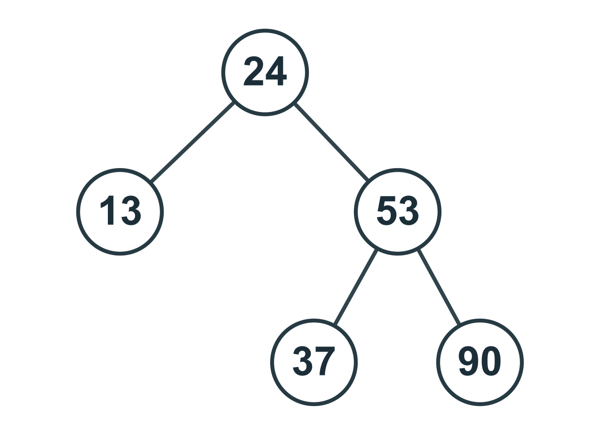
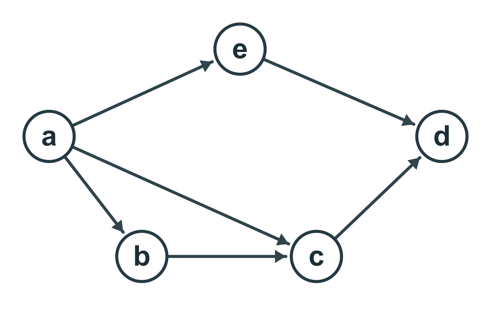
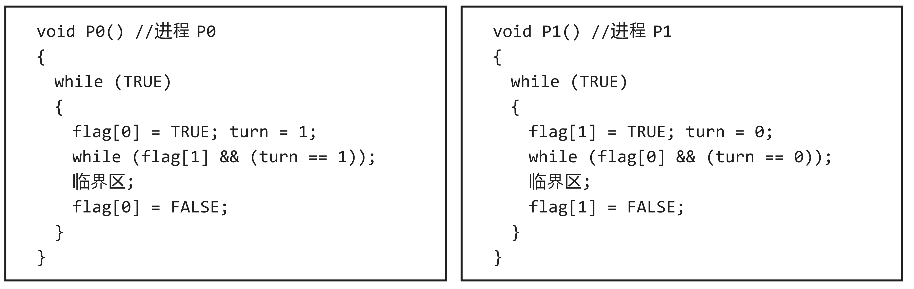
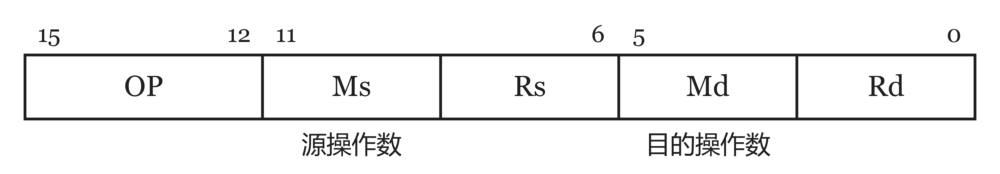
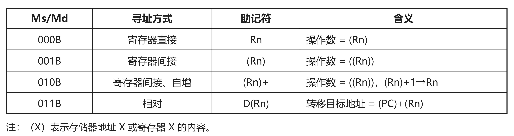

2010-01
栈若元素 a,b,c,d,e,f 依次进栈，允许进栈、退栈操作交替进行，但不允许连续三次进行退栈操作，则不可能得到的出栈序列是__。
答案：D
本题讲解：带「不许连续退栈三次」约束的出栈序列判定
答案：D。
第一步：掌握判定方法
入栈次序固定为 a,b,c,d,e,f 时，某个出栈序列能否实现，操作序列是唯一确定的：盯着目标序列的下一个字符，它不在栈顶就把尚未进栈的元素依次压入，压到它在栈顶时弹出；已出栈的元素再也不会进栈。对每个选项做一遍这样的模拟，只需检查「连续退栈是否达到 3 次」。
第二步：逐项模拟
| 选项 | 出栈序列 | 操作过程（进/退） | 最大连续退栈 | 判定 |
|---|---|---|---|---|
| A | dcebfa | 进 abcd 退 d、c；进 e 退 e、b；进 f 退 f、a | 2 | 可行 |
| B | cbdaef | 进 abc 退 c、b；进 d 退 d、a；进 e 退 e；进 f 退 f | 2 | 可行 |
| C | bcaefd | 进 ab 退 b；进 c 退 c、a；进 de 退 e；进 f 退 f、d | 2 | 可行 |
| D | afedcb | 进 a 退 a；进 bcdef 后只能连退 f、e、d、c、b | 5 | 不可行 |
第三步：D 为什么不可能
出 a 之后下一个要 f 出栈，只能把 b,c,d,e,f 全部压入；此后 e、d、c、b 依次恰在栈顶，只能继续弹出——到弹 d 时已是第 3 次连续退栈，违反约束。这条序列没有任何可回旋的余地。
易错点
- 以为操作顺序可以自由穿插：出栈序列一旦给定，何时进、何时退毫无自由度，模拟是唯一确定的，不能凭感觉说「行」。
- 把约束记成「不允许连续两次退栈」：本题允许连续退栈 2 次，第 3 次连续退栈才违规；按错口径会把 A、B、C 也判死。
结论：A、B、C 的最大连续退栈都是 2 次，只有 D 需要 5 连退，选 D。
2010-02
队列某队列允许在其两端进行入队操作，但仅允许在一端进行出队操作。若元素a,b,c,d,e依次入此队列后再进行出队操作，则不可能得到的出队序列是__。
答案：C
本题讲解：双端入队、单端出队的可达输出序列
答案：C。
第一步：明确规则
每个元素入队时可任选左端或右端，但出队只从固定的一端进行，且 a~e 全部入队之后才开始出队。所以出队序列就是「最终队形从出口端读到另一端」的读数。可达队形有个递归特征：最后入队的元素必落在两端之一；把它剥掉后，倒数第二个入队的元素又必在剩余队形的两端之一……如此逐层剥离即可检验。
第二步：逐项剥离检验
| 选项 | 目标队形 | 剥离过程 | 判定 |
|---|---|---|---|
| A | bacde | 剥 e（右端）得 bacd，剥 d（右端）得 bac，剥 c（右端）得 ba，剥 b（左端）得 a | 可行 |
| B | dbace | 剥 e（右端）得 dbac，剥 d（左端）得 bac，剥 c（右端）得 ba，剥 b（左端）得 a | 可行 |
| C | dbcae | 剥 e（右端）得 dbca，剥 d（左端）得 bca，c 夹在中间 | 不可行 |
| D | ecbad | 剥 d（右端）得 ecba，剥 a（右端）得 ecb，剥 b（右端）得 ec，剥 c（左端）得 e | 可行 |
第三步：C 卡在哪
轮到 c 入队时，队里只有 a、b（队形只可能是 ab 或 ba），c 只能落到两端，只能得到 cab、abc、cba、bac 四种队形，绝无 bca；因此 dbcae 拼不出来（把出口端换到另一侧等价于检验其逆序 eacbd，同样在 acb 处卡死）。
易错点
- 当成「两端都可出队」：那样任意排列都可得，题目就失去意义了；出口端是固定的一端。
- 忽略「先全部入队再出队」：入队途中不许出队，所以只需研究最终队形，不必考虑边进边出。
- 只查一种剥离顺序：最后入队的元素在左端还是右端都要试，本例中 e、d 的位置唯一，失败点在 c。
结论：A、B、D 都能靠「左右端交替入队」构造出来，只有 C 不可达，选 C。
2010-03
二叉树的遍历和线索二叉树下列线索二叉树中（用虚线表示线索），符合后序线索树定义的是__。
答案：D
本题讲解：后序线索树的线索指向
答案：D。
第一步：写出后序序列
树形：a 的左孩子是 b、右孩子是 c；b 没有左孩子、右孩子是 d；c、d 都是叶。按「左 → 右 → 根」遍历得后序序列：d, b, c, a。
第二步：线索规则与逐结点求指
无左孩子时左指针存后序前驱，无右孩子时右指针存后序后继；后序第一个结点无前驱、最后一个结点无后继，相应线索为 Null。
| 结点 | 空闲指针 | 应存内容 |
|---|---|---|
| d | 左、右 | 左指 Null（无前驱），右指后继 b |
| b | 左（右孩子是 d，实存） | 左指前驱 d |
| c | 左、右 | 左指前驱 b，右指后继 a |
| a | 无 | 左右孩子均实存，不含线索 |
第三步：逐项核对
- A：b 的左线索指 a，而 b 的前驱是 d，错；
- B：b 的左线索指 Null，而 b 的前驱是 d，错；
- C：b 的左线索仍指 a，且 c 的右线索指 Null，而 c 的后继是 a，都错；
- D：b 的左线索指 d（前驱），c 左指 b、右指 a，d 左指 Null、右指 b（后继），5 条线索全部吻合。
易错点
- 按中序或先序求前驱后继：线索指向哪种序列由线索树种类决定，本题是后序。
- 漏掉「首结点无前驱、末结点无后继」：d 的左线索必须是 Null，a 无任何线索。
- 以为 b 的左线索指它自己的右孩子 d 是错误：线索本就允许指向同一结点，b 的左指针存前驱 d 是合法且必需的。
结论：只有 D 的线索与后序序列 dbca 完全一致，选 D。
2010-04
树形查找在右图所示的平衡二叉树中，插入关键字 48 后得到一棵新平衡二叉树。在新平衡二叉树中，关键字 37 所在结点的左、右子结点中保存的关键字分别是__。

答案：C
本题讲解：AVL 树插入 48 的 RL 型双旋
答案：C。
第一步：插入并定位最小失衡子树
原树：24 的左孩子 13、右孩子 53；53 的左孩子 37、右孩子 90。48 介于 37 与 53 之间，作为 37 的右孩子 落位。沿插入路径向上回溯平衡因子（左高减右高）：37 为 -1、53 为 +1，都合法；到 24 时左子树高 1、右子树高 3，平衡因子 -2，失衡。24 是最小失衡子树的根。
第二步：判型并双旋
插入点落在 24 的右子树（53）的左子树（37）上，属 RL 型：先对 53 右旋，再对 24 左旋。
- 右旋 53：37 升为该子树根，37 原来的右孩子 48 改挂为 53 的左孩子，53 带着右孩子 90 下沉为 37 的右孩子；
- 左旋 24：37 升为整树根，37 原来的左孩子（空）改挂为 24 的右孩子，24 带着左孩子 13 下沉为 37 的左孩子。
第三步：读出新树
新平衡树：根 37，左孩子 24（左孩子 13、右孩子空），右孩子 53（左孩子 48、右孩子 90）。所以 37 的左、右孩子中保存的关键字是 24 和 53。
易错点
- 单旋了事：RL/LR 型必须双旋，顺序是「先旋孩子，再旋失衡根」；本例先对 53 右旋、再对 24 左旋。
- 弄反双旋方向：插入在右孩子的左子树是 RL，先右旋再左旋；若按 LR 的口诀先左后右会得到错误形态。
- 忘了接管空位：37 原左孩子为空，左旋后它成为 24 的右孩子，因此 24 的右孩子不是 48。
结论：新树中 37 的左孩子是 24、右孩子是 53，选 C。
2010-05
树的基本概念在一棵树度为 4 的树 T 中，若有 20 个度为 4 的结点，10 个度为 3 的结点，1 个度为 2 的结点，10 个度为 1 的结点，则树 T 的叶结点个数是__。
答案：B
本题讲解：用「度数和 = 边数 = 结点数 − 1」求叶结点数
答案：B。
第一步：算边数
树中每条边都给双亲结点贡献 1 度，所以所有结点的度数之和 = 边数：
边数 = 20×4 + 10×3 + 1×2 + 10×1 = 80 + 30 + 2 + 10 = 122。
第二步：算总结点数
除根以外，每个结点头顶恰有一条来自双亲的边，故结点数 = 边数 + 1 = 123。
第三步：减去非叶结点
度为 1、2、3、4 的结点都不是叶结点，共 20 + 10 + 1 + 10 = 41 个，于是叶结点数 = 123 − 41 = 82。
验算
设叶结点 x 个：度数之和 = 结点数 − 1，即 122 = (41 + x) − 1，解得 x = 82，两种算法一致。
易错点
- 漏减度为 1 的结点：只减 20+10+1 会把 10 个度为 1 的结点也当叶子，得到 92 之类的错误答案。
- 忘了「+1」：把边数 122 直接当总结点数用，会得到 121 或 81 的错误结果。
结论：叶结点 82 个，选 B。
2010-06
树与二叉树的应用对 n（n≥2）个权值均不相同的字符构造成哈夫曼树。下列关于该哈夫曼树的叙述中，错误的是__。
答案：A
本题讲解：哈夫曼树性质辨析（找错误项）
答案：A。
第一步：抓住构造过程看 B、C
哈夫曼树每次从森林中取两棵权值最小的树合并成一棵：两个结点进、一个新结点出，永远不会产生度为 1 的结点，所以树中只有度 0 与度 2 的结点（B 正确，且叶数 = 二度结点数 + 1）。第一次合并用的正是权值最小的两个结点，它们从此绑在同一个双亲下，必然是兄弟（C 正确）。
第二步：看 D 为什么正确
度为 2 的结点权值 = 左右孩子权值之和，不小于任一孩子；往下逐层同理，每个非叶结点都支配其整个子树的权值。所以任一非叶结点的权值一定不小于下一层任何结点的权值（D 正确）。
第三步：A 为什么错误
完全二叉树要求上层排满、最下层左对齐，而哈夫曼树形态随权值分布变化。反例：权值 1, 2, 3, 4, 8, 16, 32，依次合并 1+2=3、3+3=6、4+6=10、8+10=18、16+18=34、32+34=66。结果 32 是根旁边的一片大叶子，另一侧一路延伸到第 7 层——离「完全」相去甚远。哈夫曼树只保证带权路径长度最小，不保证是完全二叉树。
易错点
- 把「形态较好」误记为「完全」：这是本题的陷阱所在，哈夫曼树没有层序满排的约束。
- 怀疑 C：两最小权值最先合并是构造法的直接推论，一定成立；若权值互不相同，这一对兄弟也唯一确定。
结论：B、C、D 都是哈夫曼树的必然性质，只有 A 错误，选 A。
2010-07
图的基本概念若无向图 G = (V, E)中含有 7 个顶点，要保证图 G 在任何情况下都是连通的，则需要的边数最少是___。
答案：C
本题讲解：「任何情况下都连通」的最少边数
答案：C。
第一步：理解「任何情况下」
边数固定为 e，但边在顶点间的摆法任意。要求无论怎么摆图都连通，就必须扛住最坏的摆法——这是在求一个「保底」的边数，而不是让图恰好连通。
第二步：15 条边不够
最坏摆法：把 15 条边全部塞进 7 个顶点中的某 6 个，构成完全图 K6，边数恰为 C(6,2) = 15；第 7 个顶点孤立，图不连通。所以 15 条或更少都存在不连通的摆法。
第三步：16 条边必然连通
反证：若有 16 条边仍不连通，按连通块拆开，最大连通块至多含 6 个顶点，内部边至多 C(6,2) = 15 条；剩下的顶点至多 1 个（7 − 6），贡献不了任何边，总边数不超过 15，与 16 矛盾。直观地说：第 16 条边再也无法留在 6 个顶点内部，必然牵住第 7 个顶点。
易错点
- 误选 6：那是生成树的边数，只保证「这一种」摆法连通，随便挪一条边就可能断开。
- 误选 21：C(7,2) = 21 是完全图边数，是「最多」不是保底「最少」。
- 误选 15：恰好是 K6 的边数，正好给出反例。
结论：n 个顶点「任意摆边都连通」的最少边数 = C(n−1, 2) + 1；n = 7 时为 15 + 1 = 16，选 C。
2010-08
图的应用对右图进行拓扑排序,可以得到不同的拓扑序列的个数是___。

答案：B
本题讲解：拓扑序列个数的枚举
答案：B。
第一步：整理图与入度
边集：a→b、a→c、a→e、b→c、c→d、e→d。入度：a 为 0，b、e 各为 1，c、d 各为 2。关键点：d 同时等待 c 和 e，两者都输出后 d 才能输出。
第二步：按规则逐层枚举
拓扑排序每一步只能从「前驱已全部输出」的顶点中选一个：
| 已输出 | 此时可选 | 走向 |
|---|---|---|
| 空 | a（唯一 0 入度） | 输出 a |
| a | b、e | 两条分支 |
| a, b | c、e | 选 c：后续被锁死；选 e：再选 c |
| a, b, c | e | 只能 e，再 d → abced |
| a, b, e | c | 只能 c，再 d → abecd |
| a, e | b | 只能 b，再 c、d → aebcd |
第三步：汇总
共得到 3 个拓扑序列：abced、abecd、aebcd。
易错点
- 漏掉 abecd 或 aebcd：以为 b 必须紧跟 a；其实 a 输出后 e 也立刻可选。
- 多算 abcde：d 排在 e 前面是非法的，因为 e→d 这条边要求 e 先输出。
结论：不同的拓扑序列共 3 个，选 B。
2010-09
顺序查找和折半查找已知一个长度为 16 的顺序表 L，其元素按关键字有序排列。若采用折半查找法查找一个 L 中不存在的元素，则关键字的比较次数最多的是___。
答案：B
本题讲解：折半查找失败的最多比较次数
答案：B。
第一步：明确「失败」怎么计数
在长度 16 的有序表中找不存在的元素，会沿判定树一路走下去，直到当前区间变空才判定失败。比较只发生在内部结点上，所以失败的比较次数 = 路径上经过的内部结点个数。
第二步：构造 n=16 的判定树
每次取当前区间的中间位置比较（低端 + 高端之和整除 2）：
| 层 | 结点 |
|---|---|
| 1 | 8 |
| 2 | 4, 12 |
| 3 | 2, 6, 10, 14 |
| 4 | 1, 3, 5, 7, 9, 11, 13, 15 |
| 5 | 16 |
树高 5，恰为上取整 log2(16+1) = 上取整 log2 17 = 5。（若中点取上整，判定树左右镜像，树高不变。）
第三步：最深的失败路径
最深的一条：8 → 12 → 14 → 15 → 16，比完 16 后区间为空，判定失败，共 5 次比较。这正是「最多」的情形。
易错点
- 记成 log2 n = 4：失败探测比成功查找要多走一层，正确公式是上取整 log2(n+1)。
- 把外部结点也算一次比较：判定失败的空位置不发生比较，数的是走过的内部结点。
结论：查找失败最多比较 5 次，选 B。
2010-10
交换排序采用递归方式对顺序表进行快速排序。下列关于递归次数的叙述中，正确的是___。
答案：D
本题讲解：快速排序递归次数由什么决定
答案：D。
第一步：递归次数的来源
递归快排每次划分出左右两个分区，之后对每个非空分区各递归一次。所以递归总次数 = 全部产生的分区个数，只取决于每次划分的结果——即初始数据的排列与枢轴的选择。
第二步：逐项判断
- A 错：初始排列直接影响划分结果。每次划分接近对半时，递归层数约为 log2n；而序列基本有序、枢轴又取端点时，每次分出一个空分区，递归退化到约 n 层。递归次数显然与初始排列有关。
- B、C 错：划分一旦完成，每个分区迟早都要被递归处理一次。先处理长的还是短的，只是调用顺序不同，调用集合完全一样，总次数不变。「先处理较短分区」真正优化的是递归栈的最大深度（省空间），不是递归次数。
- D 对：递归次数与每次划分后各分区的处理顺序无关。
易错点
- 混淆「递归次数」与「栈深度」：先短后长能让栈深更浅，但调用个数一个不少——这正是 B、C 的迷惑点。
- 以为次数与初始数据无关：快排的性能恰恰依赖初始排列，这是它的短板。
结论：递归次数只由划分结果决定，与分区处理顺序无关，选 D。
2010-11
各种内部排序算法的比较及应用对一组数据（2, 12, 16, 88, 5, 10）进行排序，若前三趟排序结果如下：
第一趟排序结果：2, 12, 16, 5, 10, 88
第二趟排序结果：2, 12, 5, 10, 16, 88
第三趟排序结果：2, 5, 10, 12, 16, 88
则采用的排序方法可能是___。
答案：A
本题讲解：由前三趟结果识别排序算法
答案：A。
第一步：抓「一趟」的指纹
初始：2, 12, 16, 88, 5, 10。三趟之后依次是 88 落到末尾、16 落到第 5 位、12 落到第 4 位——「每趟把未排序部分的最大值沉到末尾」正是冒泡排序的指纹。
第二步：验证冒泡
| 趟 | 处理范围 | 相邻比较与交换后的结果 |
|---|---|---|
| 1 | 前 6 个 | 88 一路右沉到底：2, 12, 16, 5, 10, 88 ✓ |
| 2 | 前 5 个 | 16 沉到第 5 位：2, 12, 5, 10, 16, 88 ✓ |
| 3 | 前 4 个 | 12 沉到第 4 位：2, 5, 10, 12, 16, 88 ✓ |
三趟逐位吻合。
第三步：排除其余选项
- 希尔排序（取增量 3）：第 1 趟按 (2,88)、(12,5)、(16,10) 三组组内排序，应得 2, 5, 10, 88, 12, 16，不符；
- 归并排序：第 1 趟两两归并 (2,12)、(16,88)、(5,10)，各组本就有序，结果不动，不符；
- 基数排序：第 1 趟按个位分配收集，应得 10, 2, 12, 5, 16, 88，不符；
- （顺带：直接插入、简单选择的第 1 趟结果都不会动——12 已就位、2 已在首位，同样对不上。）
易错点
- 看到「部分有序」就选插入：插入排序一趟后是前缀有序，本题动的却是末尾，方向相反。
- 忽略希尔「趟」的含义：希尔的一趟是按增量分组各自排序，不会只把一个最大值挪到末尾。
结论：三趟结果与冒泡排序逐位吻合，选 A。
2010-12
计算机的性能指标下列选项中，能缩短程序执行时间的措施是___。
I. 提高 CPU 时钟频率
II. 优化数据通路结构
III. 对程序进行编译优化
答案：D
本题讲解：影响程序执行时间的三个因子
答案：D（I、II 和 III 都能缩短程序执行时间）。
第一步：找判定的基准公式
程序（CPU）执行时间 = 程序指令条数 × CPI × 时钟周期。三个因子中任何一个变小，执行时间都会缩短——判定每项措施只需回答"它压缩了哪个因子"。
第二步：逐项判定
| 措施 | 压缩的因子 | 效果 |
|---|---|---|
| I. 提高 CPU 时钟频率 | 时钟周期 = 1/主频 | 主频提高 → 时钟周期变短 → 执行时间缩短 |
| II. 优化数据通路结构 | CPI | 数据通路更顺畅，指令执行所需周期数减少 → 缩短 |
| III. 对程序进行编译优化 | 指令条数（有时兼及 CPI） | 生成更精简、更快的指令序列 → 缩短 |
三项措施分别压住三个因子，全部有效。
易错点
- 以为提高主频"只是 CPU 快、程序不变快"：同一程序指令数与 CPI 不变时，执行时间与时钟周期成正比，主频提高直接缩短执行时间。
- 以为编译优化与硬件无关而不算：编译优化减少指令条数，同样属于缩短程序执行时间的措施。
- 把优化数据通路误当成提高主频：它改变的是每条指令花的周期数（CPI），不是主频。
记忆锚点：执行时间 = 指令数 × CPI × 时钟周期——I 管"周期"、II 管"CPI"、III 管"条数"，三个因子全部被压住，答案 D。
2010-13
运算方法和运算电路假定有 4 个整数用 8 位补码分别表示 r1 = FEH，r2 = F2H，r3 = 90H，r4 = F8H，若将运算结果存放在一个 8 位寄存器中，则下列运算中会发生溢出的是___。
答案：B
本题讲解：8 位补码乘法结果的溢出判断
答案：B（r2×r3 会溢出）。
第一步：先把四个十六进制数还原成真值
补码的符号位参与定权：最高位是 1 即负数。例如 F2H = 1111 0010B，按位取反加 1 得 0000 1110 = 14，故 r2 = −14。
| 寄存器 | 十六进制 | 二进制 | 真值 |
|---|---|---|---|
| r1 | FEH | 1111 1110 | −2 |
| r2 | F2H | 1111 0010 | −14 |
| r3 | 90H | 1001 0000 | −112 |
| r4 | F8H | 1111 1000 | −8 |
第二步：逐个算乘积，与 8 位补码表示范围比较
8 位补码能表示的范围是 −128 ~ +127，超出即溢出：
| 运算 | 乘积 | 是否溢出 |
|---|---|---|
| A. r1×r2 | (−2)×(−14) = +28 | 不溢出 |
| B. r2×r3 | (−14)×(−112) = +1568 | 溢出（1568 > 127） |
| C. r1×r4 | (−2)×(−8) = +16 | 不溢出 |
| D. r2×r4 | (−14)×(−8) = +112 | 不溢出（112 ≤ 127，临界但未超） |
若真把 1568 塞进 8 位寄存器，保留的低 8 位是 0010 0000B = 32，与真值 1568 完全对不上——这就是溢出。
易错点
- 只看符号不算数值：四个乘积全是正数，"符号不溢出"，溢出的是数值幅度，必须算出真值与 127 比较。
- 把 D 误判为溢出：112 距上限 127 只差 15，但没超界就不溢出。
- 忘了正数上限是 127 而不是 128：正乘积要跟 +127 比，负乘积才跟 −128 比。
记忆锚点：8 位补码范围 −128~+127；负负相乘得大正数最容易爆表，四个选项里只有 1568 越界，选 B。
2010-14
浮点数的表示与运算假定变量 i、f 和 d 的数据类型分别为 int、float 和 double（int 用补码表示，float 和 double 分别用 IEEE 754 单精度和双精度浮点数格式表示），已知 i = 785，f = 1.5678e3，d = 1.5e100。若在 32 位机器中执行下列关系表达式，则结果为“真”的是___。
I. i==(int)(float)i
II. f==(float)(int)f
III. f==(float)(double)f
IV. (d+f)-d==f
答案：B
本题讲解：int/float/double 类型转换的精度取舍
答案：B（仅 I 和 III 为真）。
第一步：抓住各转换的"精度规则"
- float 有 24 位二进制有效位，能精确表示绝对值不超过 224（16 777 216）的整数。
- float → int：截断小数，必然丢掉小数部分。
- float → double：double 有效位更多，转换无损；再转回 float 得到原值。
- double 大数加小数：double 只有 53 位有效位，两数相差悬殊时，小数落不到大数的末位有效格子里，被完全"吸收"。
第二步：逐式判定
| 表达式 | 分析 | 结果 |
|---|---|---|
| I. i==(int)(float)i | i = 785 < 224，int→float 精确，转回仍是 785 | 真 |
| II. f==(float)(int)f | f = 1567.8，(int)f 截断为 1567，再变回 1567.0，比原值少了 0.8 | 假 |
| III. f==(float)(double)f | float→double 无损、double→float 舍入回原值 | 真 |
| IV. (d+f)−d==f | d = 1.5×10100 的相邻可表示数间隔远大于 1567.8，d+f 舍入后仍等于 d，(d+f)−d = 0 | 假 |
易错点
- 以为 int→float 总会丢精度：只有绝对值超过 224 的整数才丢，785 远没到。
- 以为 float→double→float 有"往返损耗"：float 的可表示数是 double 的子集，往返无损。
- 漏看 IV 的数量级：1.5×10100 与 1567.8 相加，小数根本进不了双精度数的有效位，减回来只剩 0。
记忆锚点：整数往返看 224；小数取整必截尾；升精度无损、降精度舍入；大数吃小数——为真的只有 I 和 III，选 B。
2010-15
主存储器与CPU的连接假定用若干 2K×4 位的芯片组成一个 8K×8 位的存储器，则地址 0B1FH 所在芯片的最小地址是___。
答案：D
本题讲解：存储芯片组的最小地址（位扩展 + 字扩展）
答案：D（0800H）。
第一步：算出存储器的组织结构
- 目标 8K×8 位；芯片 2K×4 位。
- 位扩展：2 片并联凑够 8 位数据，组成一组 2K×8 位（两片共用同一组地址）。
- 字扩展：4 组依次编址，凑够 8K 单元。
- 总单元数 8K = 213 → 芯片地址共 13 位（A12~A0）；每组 2K = 211 → 片内地址占低 11 位（A10~A0），高 2 位（A12A11）用来选组。
第二步：列出各组地址范围
| 组号 | A12A11 | 地址范围 |
|---|---|---|
| 第 0 组 | 00 | 0000H ~ 07FFH |
| 第 1 组 | 01 | 0800H ~ 0FFFH |
| 第 2 组 | 10 | 1000H ~ 17FFH |
| 第 3 组 | 11 | 1800H ~ 1FFFH |
第三步：定位 0B1FH
0B1FH = 0000 1011 0001 1111B。取低 13 位参与芯片选址：A12 = 0、A11 = 1，组选择位 A12A11 = 01 → 落在第 1 组，该组（即该地址所在芯片组）的地址范围是 0800H ~ 0FFFH；片内偏移 = 0B1FH − 0800H = 31FH。
所在芯片的最小地址就是该组基址 0800H。
易错点
- 忘了位扩展的两片共用地址：同一组的 2 片 2K×4 位地址范围完全相同，"所在芯片"的最小地址就是所在组的基址。
- 直接按十进制粗算组号出错：0B1FH = 2847，2847 ÷ 2048 商 1 余 799 → 第 1 组，与按位判断一致。
- 以为"最小地址"还要换算：问的就是组基址本身，不用再加片内偏移。
记忆锚点：13 位地址 = 高 2 位选组 + 低 11 位片内；0B1F 的高两位是 01 → 第二组 → 最小地址 0800H，选 D。
2010-16
主存储器下列有关 RAM 和 ROM 的叙述中，正确的是___。
I. RAM 是易失性存储器，ROM 是非易失性存储器
II. RAM 和 ROM 都采用随机存取方式进行信息访问
III. RAM 和 ROM 都可用作 Cache
IV. RAM 和 ROM 都需要进行刷新
答案：A
本题讲解：RAM 与 ROM 的特性对比
答案：A（仅 I 和 II 正确）。
第一步：先立机制——两把尺子分开量
判断 I~IV 要用两把互不相干的尺子：信息靠什么保住（决定易失性与刷新）、怎么访问（决定随机存取）。
第一把尺子看保存介质。DRAM 用电容存电荷，电荷会泄漏——所以要定时刷新续命，断电更是一失俱失，这是"易失"的根源；SRAM 用双稳态触发器，不掉电就保持，不需刷新，但断电同样丢——也是易失。ROM 把位通过掩膜或浮栅电荷"写死"在物理结构里，断电不失、更不需要任何刷新——非易失。
第二把尺子看寻址方式。随机存取说的是"给出任意地址，存取时间都一样、与位置无关"，它和"能不能写"是正交的两个维度。ROM 内部同样有地址译码器，按地址直接读出，所以 ROM 也是随机存取——"随机存取"不是 RAM 的专利。
第二步：Cache 为什么只能 SRAM 干
Cache 的本职是主存活跃块的动态副本，要不断换入换出、必须可写且快——ROM 只读、天然出局，只有 SRAM 合格。由此 III、IV 判死，I、II 成立。
第三步：逐条对号入座
| 叙述 | 判定 | 归因 |
|---|---|---|
| I. RAM 易失、ROM 非易失 | 正确 | 保存介质：电容/触发器 vs 掩膜/浮栅 |
| II. 都采用随机存取 | 正确 | 都按地址译码直接访问；随机存取与可写与否无关 |
| III. 都可用作 Cache | 错误 | Cache 需动态可写，ROM 只读 |
| IV. 都需要刷新 | 错误 | 刷新是 DRAM 电容泄漏的专属补救 |
易错点
- 以为 ROM 不能随机访问、只能顺序读：ROM 是按地址访问的随机存取存储器，只是"只读"——漏掉 II 的根源。
- 以为 SRAM 也要刷新：刷新是 DRAM（电容存电荷会泄漏）特有的操作。
- 忽略 Cache 需要可写：Cache 行要不断换入换出，只读器件当不了 Cache。
记忆锚点：RAM 易失、ROM 非易失；二者都随机存取；Cache 用 SRAM、刷新归 DRAM——正确的是 I 和 II，选 A。
2010-17
高速缓冲存储器虚拟存储器下列命中组合情况中，一次访存过程中不可能发生的是
答案：D
本题讲解：TLB / Cache / Page 命中组合的可能性判断
答案：D（TLB 命中、Cache 命中、Page 未命中不可能发生）。
第一步：理清三级结构与关键规则
一次访存涉及三级查找：TLB（页表项的高速副本）→ Page（页面是否已调入主存）→ Cache（主存数据块副本）。
关键规则：TLB 缓存的是"已调入主存的页面"的有效页表项——页面没进主存（缺页）时页表项无效，根本不会被 TLB 收留。因此：
TLB 命中 ⇒ 页面必在主存 ⇒ Page 必命中；TLB 未命中则对 Page、Cache 没有任何约束（单箭头，逆推不成立）。
第二步：逐项检验
| 组合 | 可能性 | 理由 |
|---|---|---|
| A. TLB✗ Cache✗ Page✗ | 可能 | 访问一个从未调入的页面 |
| B. TLB✗ Cache✓ Page✓ | 可能 | 页表项不在 TLB（可能刚被替换出），但页面在内存、数据在 Cache |
| C. TLB✓ Cache✗ Page✓ | 可能 | TLB 给出物理地址，但该数据块恰好不在 Cache |
| D. TLB✓ Cache✓ Page✗ | 不可能 | TLB 命中已保证 Page 命中，与"Page 未命中"矛盾 |
易错点
- 以为 TLB 未命中就要缺页：TLB 未命中只是要再去主存查一次页表，页面多半还在内存。
- 把 Cache 命中与 Page 命中互相挂钩：二者彼此独立，谁也推不出谁。
- 忽略 TLB 缓存内容的有效性：TLB 不会缓存无效（缺页）页表项，这是 D 自相矛盾的根源。
记忆锚点：TLB 命中 ⇒ Page 命中（单向）；反方向与 Cache 方向都不成立——不可能的组合是 D。
2010-18
CPU的功能和基本结构下列寄存器中，汇编语言程序员可见的是
答案：B
本题讲解：哪些寄存器对汇编程序员"可见"
答案：B（程序计数器 PC）。
第一步：明确"可见"的判据
汇编程序员可见 = 能被汇编指令直接或间接地使用/影响：可以编程改变它、能感知它的变化、它会影响程序流程。一句话判据：程序里"摸得到"的才可见。
第二步：逐项检验
| 寄存器 | 可见性 | 理由 |
|---|---|---|
| A. MAR | 不可见 | CPU 访存时由硬件自动装入地址，没有指令能访问它 |
| B. PC | 可见 | 转移、调用、返回指令都会改变 PC 的取值，程序员以此控制程序流向 |
| C. MDR | 不可见 | 访存数据的缓冲由硬件自动完成 |
| D. IR | 不可见 | 取指部件自动装入当前指令，程序员无法干预 |
易错点
- 把"可见"理解成"硬件会用到"：MAR/MDR/IR 恰是 CPU 内部的"工作寄存器"，硬件天天用，但程序摸不到——它们对程序员透明。
- 以为 PC 只能由硬件改：执行转移指令时 PC 被赋为目标地址，这正是程序员控制 PC 的方式。
- 误选 IR：能"看到"指令内容是反汇编/调试层面的事，不属于指令系统能力，程序员无法读写 IR。
记忆锚点：对程序员可见的通常只有 PC、通用寄存器、条件码寄存器等；MAR、MDR、IR、微指令寄存器一律透明——选 B。
2010-19
指令流水线下列选项中，不会引起指令流水线阻塞的是
答案：A
本题讲解：流水线三大冒险与数据旁路
答案：A（数据旁路/转发不会引起流水线阻塞）。
第一步：分清"病"与"药"
引起流水线阻塞（必须暂停等待、插入气泡）的三类来源是：数据相关（数据冒险，后条指令要等前条指令的结果）、条件转移（控制冒险，转移方向未定、后续取指可能作废）、资源冲突（结构冒险，多条指令争用同一部件）。
数据旁路（转发）不是冒险，而是解决数据相关的技术：它把上一条指令在 ALU 算出的结果直接从流水段之间送到下一条指令的输入端，免去"等写回再读"的停顿。
第二步：逐项检验
| 选项 | 是否引起阻塞 | 说明 |
|---|---|---|
| A. 数据旁路（转发） | 否 | 是减少阻塞的机制，不是阻塞的来源 |
| B. 数据相关 | 是 | 后条指令要等前条结果，无旁路时只能暂停 |
| C. 条件转移 | 是 | 方向未定，后续指令可能作废、需重新取指 |
| D. 资源冲突 | 是 | 争用同一功能部件/存储器，只能排队等待 |
易错点
- 看到"数据"两个字就选 B：题问的是"不会引起阻塞"的那一项，旁路与数据相关是"药与病"的关系，别混为一谈。
- 以为旁路要占用额外资源：旁路只是增加段间数据通路，不占用访存周期，不会造成新的冲突。
记忆锚点：数据冒险、控制冒险、结构冒险是流水线三大阻塞源；旁路/转发是对付数据冒险的手段，本身不阻塞——选 A。
2010-20
总线概述下列选项中的英文缩写均为总线标准的是
答案：D
本题讲解：识别常见总线标准缩写
答案：D。
第一步：先立判别框架——按"领域归属"认缩写
总线标准是规定互连规范的标准名称：设备/插卡经由它接到系统上，涉及电气特性、时序与协议。PC 的总线家族其实是一条演进线：ISA → EISA → VESA → PCI → PCI-Express，外加 USB、SCSI、AGP 等接口总线。拿到一个缩写，先问它属于哪个领域——互连规范才是总线；显示器件、存储器件、性能指标这三类名词与互连规范无关，一眼出局。
第二步：先把"不是总线"的缩写揪出来
| 缩写 | 真实身份 | 出现在哪一项 |
|---|---|---|
| CRT | 阴极射线管显示器（I/O 设备） | A |
| CPI | 每条指令时钟周期数（性能指标） | B |
| RAM | 随机存取存储器（存储器件） | C |
| MIPS | 每秒百万条指令（性能指标） | C |
含非总线成员的选项整体出局。
第三步：核对 D 的四个成员
ISA（工业标准总线）→ EISA（扩展 ISA）→ PCI（外围部件互连总线）→ PCI-Express（PCI 的串行演进版）——四个全部是总线标准，无一滥竽。
易错点
- 把 CRT 当成总线：CRT 是显示器设备，别与 VESA 这类显示接口总线混淆。
- 把 MIPS、CPI 当总线：它们是衡量 CPU 性能的指标，与总线无关。
- 误以为 USB、SCSI 不是总线：它们恰恰是常见总线/接口标准（本题未考，但有助于建立"成员库"）。
记忆锚点：总线标准一条线记下来：ISA → EISA → VESA → PCI → PCI-Express，再加 USB、SCSI、AGP；看到 CRT、CPI、MIPS、RAM 一律不是总线。选 D。
2010-21
异常和中断机制I/O方式单级中断系统中，中断服务程序内的执行顺序是
I. 保护现场
II. 开中断
III. 关中断
IV. 保存断点
V. 中断事件处理
VI. 恢复现场
VII. 中断返回
答案：A
本题讲解：单级中断服务程序的执行顺序
答案：A（I→V→VI→II→VII）。
第一步：先把不属于服务程序的两项剔除
- 保存断点（IV）、关中断（III）：由中断隐指令（硬件）在中断周期自动完成，不写进服务程序——凡把 III、IV 排进顺序的选项 B、C、D 直接排除。
- 单级中断的特点：进入服务程序后全程关中断（不允许嵌套），服务程序内部不会再出现"关中断"动作。
第二步：排出服务程序内的顺序
| 次序 | 动作 | 说明 |
|---|---|---|
| 1 | I. 保护现场 | 保存通用寄存器等内容，防止被中断事件破坏 |
| 2 | V. 中断事件处理 | 完成设备要求的具体服务 |
| 3 | VI. 恢复现场 | 恢复第 1 步保护的内容 |
| 4 | II. 开中断 | 现场已完整恢复，允许返回后响应新的中断请求 |
| 5 | VII. 中断返回 | 由中断返回指令恢复断点、回到原程序 |
保护现场与恢复现场期间必须保持关中断（否则现场可能被新中断破坏）；单级中断不允许嵌套，"开中断"只能安排在恢复现场之后、中断返回之前。
易错点
- 把"保存断点、关中断"写进服务程序：那是中断隐指令（硬件）的活，对应错误选项 C、D。
- 把"开中断"放在保护现场之前：开早了现场就可能被新中断破坏（那是允许嵌套的中断系统的做法）。
- 漏掉开中断：不开中断，返回后 CPU 将无法再响应任何中断请求。
记忆锚点：硬件先"关中断＋存断点"，软件后"保现场 → 处理 → 恢复现场 → 开中断 → 返回"，即 I→V→VI→II→VII，选 A。
2010-22
存储器概述I/O系统基本概念假定一台计算机的显示存储器用DRAM芯片实现，若要求显示分辨率为1600×1200，颜色深度为24位，帧频为85Hz，显存总带宽的50%用来刷新屏幕，则需要的显存总带宽至少约为
答案：D
本题讲解：显存带宽的"刷新占比"计算
答案：D（约 7834Mbps）。
第一步：算刷新屏幕需要的那一路带宽
每帧数据量 = 分辨率 × 颜色深度 = 1600 × 1200 × 24 bit = 46 080 000 bit。
每秒刷新带宽 = 每帧 × 帧频 = 46 080 000 × 85 = 3 916 800 000 bit/s ≈ 3916.8 Mbps。
第二步：按占比放大成显存总带宽
刷新屏幕只占总带宽的 50%，故：
显存总带宽 = 3916.8 Mbps ÷ 50% = 7833.6 ≈ 7834 Mbps。
第三步：核对干扰项
四个选项恰好是正确值的 1/32、1/8、1/4 和 1 倍（245 / 979 / 1958 / 7834）——漏乘帧频、漏乘颜色深度或把 50% 用反（除成乘），都会掉进 A、B、C。
易错点
- 把"50% 用来刷新"理解反了：是刷新占用总带宽的一半，总带宽 = 刷新带宽 ÷ 50%，不是刷新带宽 × 50%。
- 漏乘帧频 85：只剩每帧的约 46Mb，数量级立刻掉下去。
- bit 与 Byte 混淆：8 倍差距，一错数量级就全错。
记忆锚点：刷新带宽 = 分辨率 × 色深 × 帧频；总带宽 = 刷新带宽 ÷ 占比。3916.8 ÷ 0.5 ≈ 7834Mbps，选 D。
2010-23
操作系统的运行环境下列选项中，操作系统提供给应用程序的接口是
答案：A
本题讲解：操作系统提供给应用程序的接口
答案：A（系统调用）。
第一步：分清两类接口
操作系统向上提供两类接口：面向用户的命令接口（如命令行）和面向应用程序的程序接口。程序接口就是系统调用：应用程序不能直接执行特权指令（启停外设、改页表等），只能通过系统调用"陷入"内核，由操作系统代为完成服务。
第二步：逐项排除
- B 中断：中断是 CPU 对异步事件的响应机制，属于系统内部的处理手段，方向是"事件找系统"，不是应用程序主动请求服务的入口。
- C 库函数：printf、fopen 等只是对系统调用的封装，它属于函数库而非操作系统本体；不经库函数、直接用陷入指令同样能发起系统调用。
- D 原语：原语是内核内部不可分割的指令序列（如开关中断、P/V 操作的底层实现），只供内核自己使用，不对应用程序开放。
易错点
- 把库函数当接口：库函数是"包装盒"，真正的接口是它背后的系统调用；题目问的是"操作系统提供"的，所以选系统调用而非库函数。
- 把中断当接口：中断是"系统响应事件"的机制，与"应用请求系统服务"的方向相反。
记忆锚点：系统调用 = 操作系统提供给应用程序的唯一官方程序接口；库函数只是封装，中断与原语都不是应用可调用的接口。
2010-24
进程与线程简介下列选项中，导致创建新进程的操作是
I. 用户登录成功
II. 设备分配
III. 启动程序执行
答案：C
本题讲解：哪些事件会创建新进程
答案：C（仅 I 和 III）。
第一步：先立判断标准
创建进程 = 让一段程序从"静态"变成"动态"执行。教材归纳的典型时机有四类：用户登录（分时系统为登录用户建立进程）、作业调度（把作业装入内存）、提供服务（用户请求某项服务时专门建进程处理）、应用请求（进程自己请求创建子进程）。
第二步：逐项判断
- I 用户登录成功：对。登录成功后系统要为该用户建立会话/服务进程，正是"用户登录"这一典型时机。
- II 设备分配：错。分配设备只是把资源交给已存在的进程使用，资源分配不产生新的程序执行流，不会创建新进程。
- III 启动程序执行：对。程序是静态文件，启动执行必须先创建进程（建 PCB、分配资源），属于"作业调度/应用请求"时机。
第三步：组合
会创建新进程的是 I 和 III，选 C。
易错点
- 把"分配资源"当成"创建进程"：设备分配、内存分配都只是资源管理动作，干扰项 II 考的正是这一点。
- 漏掉用户登录：误以为登录只是"验证口令"，实际验证成功后系统要新建进程为用户服务。
记忆锚点：登录、调度、服务、应用请求会创建进程；分配资源不创建进程。
2010-25
同步与互斥设与某资源关联的信号量初值为3，当前值为1。若M表示该资源的可用个数，N表示等待该资源的进程数，则M、N分别是
答案：B
本题讲解：信号量当前值的双重含义
答案：B（M=1，N=0）。
第一步：回忆信号量数值的含义
记录型信号量 S 的当前值有三种含义：S 大于 0 表示当前还可用的资源个数；S 等于 0 表示资源刚好用完且无人等待；S 小于 0 其绝对值表示已阻塞在等待队列中的进程个数。
第二步：代入当前值 1
初值 3 只说明"最初有 3 个资源"，判断要用当前值 1：
| 量 | 取值 | 依据 |
|---|---|---|
| 可用资源个数 M | 1 | 当前值 1 大于 0，正值即资源数 |
| 等待进程数 N | 0 | 只要 S 大于 0，等待队列必为空 |
- S = 1 大于 0 → 还有 1 个资源可用，M = 1；
- 有进程在等待的前提是申请失败把 S 减成了负数，而现在 S = 1，说明没有任何进程被阻塞 → N = 0。
易错点
- 拿初值做文章：3 是初始资源数，不是当前的；选 C（1、2）的典型错误就是用 3 减 1 凑出"2 个等待"。
- 符号搞反：以为 S=1 表示"有 1 个进程在等"——那是 S=−1 的含义。
记忆锚点：看当前值的符号——正数是可用资源数、等待为 0；负数取绝对值是等待进程数、资源为 0。
2010-26
CPU调度下列选项中，降低进程优先级的合理时机是
答案：A
本题讲解：什么时候该降低进程优先级
答案：A（进程的时间片用完）。
第一步：抓住动态优先级的设计意图
调整优先级是为了公平与效率，方向口诀：刚消耗完 CPU 的人应让位（降），久等的人应补偿（升），刚做完 I/O 的人应奖励（升）。
第二步：逐项分析
- A 时间片用完：对。该进程刚独占 CPU 跑满一个时间片，若不降级，它很可能立刻再次抢占 CPU。此时降低优先级，给其他进程机会，正是"降低"的合理时机。
- B 刚完成 I/O 进入就绪队列：错。I/O 型进程刚交出 CPU 去等 I/O，回来后应提高优先级让它尽快处理下一批 I/O，提升设备与 CPU 的并行度。
- C 长期处于就绪队列中：错。这是"饥饿"的前兆，应当提高优先级（老化/aging 策略），而不是雪上加霜。
- D 从就绪转为运行：错。刚被调度器选中上台，说明它当前优先级够高，与降级无关；降级应发生在它放弃 CPU（如时间片用完）时。
易错点
- 方向记反：完成 I/O 与长期等待都是"加冕"时机，只有"刚用完 CPU"是"降级"时机。
- 误选 D：就绪转运行是它优先级高的结果，不是降低优先级的理由。
记忆锚点：用完时间片 → 降；做完 I/O、久等未运行 → 升。
2010-27
同步与互斥进程 P0 和 P1 的共享变量定义及其初值为：
boolean flag[2];
int turn=0;
flag[0]=FALSE; flag[1]=FALSE;若进程 P0 和 P1 访问临界资源的类 C 伪代码实现如下：

则并发执行进程P0和P1时产生的情形是
答案：D
本题讲解：Peterson 算法的互斥与饥饿分析
答案：D（能保证进程互斥进入临界区，不会出现饥饿现象）。
第一步：读懂代码结构
两进程完全对称：先举旗 flag[i]=TRUE，再把 turn 设为对方编号（表示"你先请"），然后在 while(flag[对方] && turn==对方); 处等待。变量 turn 的含义是"谦让之后轮到谁"。
第二步：为什么互斥成立
设两进程同时竞争：P0 执行 turn=1，P1 执行 turn=0（P1 后写，覆盖 P0 的值），turn 最终为 0：
| 进程 | 等待条件 | 终值下的判断 | 结果 |
|---|---|---|---|
| P0 | flag[1] 且 turn==1 | turn=0，条件不成立 | 放行 |
| P1 | flag[0] 且 turn==0 | 两条件都成立 | 等待 |
turn 只有一个终值，两个 while 条件不可能同时为假，任一时刻至多一人进入临界区——互斥成立。
第三步：为什么不会饥饿
P1 等待的根源是 flag[0]=TRUE。P0 用完临界区后执行 flag[0]=FALSE，P1 的 while 条件立刻不成立而进入——等待者最多等对方用完一次临界资源；若只有一方想进入（对方 flag 为 FALSE），它更是直接通过检查。等待都是有限的，故不会饥饿。
易错点
- 以为 turn 被覆盖会破坏互斥：恰恰相反，"后写者生效"保证了终值唯一，正是互斥的支柱。
- 把"要等一会儿"当成饥饿：饥饿指无限期等待；这里 P1 在 P0 退出后立即进入，等待有限。
记忆锚点：flag 保证"退出即放行"，turn 保证"竞争只出一人"——两者合起来：互斥成立且无饥饿。
2010-28
内存管理概念某基于动态分区存储管理的计算机，其主存容量为 55MB（初始为空闲），采用最佳适配（Best Fit）算法，分配和释放的顺序为：分配 15MB，分配 30MB，释放 15MB，分配 8MB，分配 6MB，此时主存中最大空闲分区的大小是__。
答案：B
本题讲解：动态分区最佳适配（Best Fit）推演
答案：B（此时主存中最大空闲分区为 9MB）。
第一步：规则与初始状态
最佳适配：每次分配时从所有空闲分区中挑能装下的最小者切割。主存 55MB 初始全空闲（一个 55MB 的空闲分区）。
第二步：逐步推演
| 操作 | 选择的空闲分区 | 操作后空闲分区 | 说明 |
|---|---|---|---|
| 分配 15MB | 55MB | 40MB | 唯一空闲块，切走 15 |
| 分配 30MB | 40MB | 10MB | 切走 30 |
| 释放 15MB | — | 15MB、10MB | 归还成新空闲块 |
| 分配 8MB | 10MB | 15MB、2MB | 在 15 与 10 中选最小可容纳的 10，剩 2MB 碎片 |
| 分配 6MB | 15MB | 9MB、2MB | 2MB 装不下，只能切 15MB，剩 9MB |
第三步：看结果
最终空闲分区为 9MB 与 2MB，最大空闲分区 = 9MB，选 B。
易错点
- 把 Best Fit 当 First Fit：分配 8MB 时若按首次适配从 15MB 切，后面结果全变——必须先比较所有空闲分区再动手，这正是本题的考点。
- 忘记小碎片：切 10MB 剩下的 2MB 仍是空闲分区，统计"最大空闲分区"时不要漏掉，也不要把它误当成大块。
记忆锚点：Best Fit = "装得下里挑最小的"；切完剩下的碎块仍要计入空闲分区。
2010-29
内存管理概念某计算机采用二级页表的分页存储管理方式，按字节编址，页大小为 210 B，页表项大小为 2B，逻辑地址结构为
[ 页目录号 | 页号 | 页内偏移量 ]
逻辑地址空间大小为 216 页，则表示整个逻辑地址空间的页目录表中包含表项的个数至少是__。
答案：B
本题讲解：二级页表页目录表项数的计算
答案：B（至少 128 个）。
第一步：理清三个量
- 页大小 2 的 10 次方 B → 页内偏移占 10 位；
- 页表项 2B → 一张页表（正好占一页）能存 2 的 10 次方 ÷ 2 = 2 的 9 次方 = 512 个页表项，即一张页表最多映射 512 页；
- 逻辑地址空间共 2 的 16 次方页。
第二步：求页目录项数
页目录表的每一项指向一张页表，一张页表管 512 页，要覆盖 2 的 16 次方页，需要页目录项数：
2 的 16 次方 ÷ 2 的 9 次方 = 2 的 7 次方 = 128 项，选 B。
第三步：自洽性核对
128 项 × 2B = 256B，小于一页 2 的 10 次方 B，页目录表本身能放进一页，方案成立。
易错点
- 把"2 的 16 次方页"当成字节数：题目给的是逻辑地址空间为 2 的 16 次方页，不需要再乘页大小。
- 张冠李戴到 512：512 是"每张页表的项数"，页目录项数问的是"需要多少张页表"，别选 D。
- 2 的幂用错一级：页表项若误按 4B 算会得 256（干扰项 C）；把"每张页表管的页数"错用成页大小 2 的 10 次方就得到 64（干扰项 A）。核心公式只有一条：页目录项数 = 总页数 ÷（页大小 ÷ 页表项大小）。
记忆锚点：页目录项数 = 逻辑页数 ÷ 每张页表可容纳的页表项数。
2010-30
文件系统基础设文件索引结点中有 7 个地址项，其中 4 个地址项是直接地址索引，2 个地址项是一级间接地址索引，1 个地址项是二级间接地址索引，每个地址项大小为 4B。若磁盘索引块和磁盘数据块大小均为 256B，则可表示的单个文件最大长度是__。
答案：C
本题讲解：混合索引方式的最大文件长度
答案：C（1057KB）。
第一步：先算"一个索引块装几个地址"
磁盘块 256B，地址项 4B，所以一个索引块能容纳 256 ÷ 4 = 64 个地址项。这个 64 是所有间接层数的基数。
第二步：分层数数据块
| 地址项 | 个数 | 能索引的数据块数 | 小计 |
|---|---|---|---|
| 直接地址 | 4 | 4 × 1 | 4 |
| 一级间接 | 2 | 2 × 64 | 128 |
| 二级间接 | 1 | 1 × 64 × 64 | 4096 |
合计 4 + 128 + 4096 = 4228 个数据块。
第三步：换算文件长度
4228 × 256B = 1082368B = 1082368 ÷ 1024 = 1057KB，选 C。
易错点
- 漏掉二级间接：只算 4+128 = 132 块，得 33KB，正是干扰项 A。
- 间接层数乘错：二级间接要连乘两次 64（64×64 = 4096）——先由地址项指向索引块，再由索引块指向数据块；少乘一层或位置放错就会凑出 B、D 这类干扰值。
- 单位换算错：算出 1082368B 后忘除以 1024 换成 KB。
记忆锚点：一级乘一次 64，二级乘两次 64；最后统一除 1024 化成 KB。
2010-31
目录设置当前工作目录的主要目的是__。
答案：C
本题讲解：设置当前工作目录的主要目的
答案：C（加快文件的检索速度）。
第一步：文件访问为什么要"检索"
按名存取：用户给出路径名，系统必须沿目录结构逐级查找目录项，才能定位文件的 FCB/索引结点。若每次都从根目录开始走绝对路径，路径越长，逐级查目录的开销越大。
第二步：当前目录做了什么
系统允许用户把某个目录设为当前工作目录，此后文件可用相对路径访问——检索从当前目录出发，省掉了"根目录到当前目录"这一长段的逐级查找，目录检索的开销明显下降，即加快了文件的检索速度。
第三步：排除干扰项
- A / B 节省外存、内存空间：当前目录只是检索的"起点约定"，不减少目录文件本身的存储，与空间无关。
- D 加快文件的读写速度：读写速度取决于磁盘性能与缓冲策略；目录机制改变的只是"找到文件"的过程，不是"读写数据"的过程。
易错点
- "检索"与"读写"混为一谈：D 是最强干扰项——找到文件快了，不等于读写数据快了。
- 以为是省空间的技术：它优化的是检索时间，不是存储空间。
记忆锚点：当前目录 = 相对路径的起点，省的是目录检索的时间。
2010-32
操作系统的运行环境I/O管理概述本地用户通过键盘登录系统时，首先获得键盘输入信息的程序是__。
答案：B
本题讲解：键盘输入信息的"第一响应者"
答案：B（中断处理程序）。
第一步：顺着硬件事件链走
本地敲键盘：键盘控制器产生中断信号 → CPU 在每条指令执行结束后检查并响应中断 → 转入中断处理程序，由它从键盘控制器读走扫描码/字符并放入输入缓冲。此时任何上层程序（登录程序、shell）都还没有碰到数据。
第二步：逐项排除
- A 命令解释程序：shell 要等输入缓冲里有内容、且轮到它运行时才去读——它是输入的"消费者"，不是最先获得者。
- C 系统调用服务程序：处理应用程序主动发起的系统调用；键盘输入是异步硬件事件，不经过系统调用入口。
- D 用户登录程序：登录程序本身要靠"读到输入"才能工作，逻辑上排在中断处理之后。
易错点
- 把 shell 当第一响应者：登录场景容易联想到 shell，但异步硬件事件的第一站永远是中断处理程序。
- 混淆"产生中断"与"处理中断"：硬件只负责发出中断信号，真正读走数据的是中断处理程序。
记忆锚点：一切异步 I/O 的第一响应者 = 中断处理程序；命令解释、登录程序都是后续的"消费者"。
2010-33
计算机网络体系结构与参考模型下列选项中，不属于网络体系结构所描述的内容是__。
答案：C
本题讲解：网络体系结构描述的内容
第一步：先明确"体系结构"管什么
网络的体系结构是计算机网络的各层及其协议的集合，用抽象的方式回答三件事：网络分成哪些层次、每层使用什么协议、每层必须完成什么功能（以及相邻层之间的接口）。它的性质是功能定义：只规定"做什么"，不规定"怎么做"。
第二步：逐项对照三要素
| 选项 | 内容 | 是否属于体系结构 |
|---|---|---|
| A | 网络的层次 | 属于：分层是体系结构的第一要素 |
| B | 每层使用的协议 | 属于：每层协议正是其组成部分 |
| C | 协议的内部实现细节 | 不属于：实现细节是具体工程问题 |
| D | 每层必须完成的功能 | 属于：功能边界由体系结构定义 |
体系结构说清每层对外提供什么服务、遵循什么协议就止步了；至于协议内部用什么算法、用软件还是硬件实现，都留给设计者自由发挥，不属体系结构的描述范围。
答案：C。
易错点
- 把"包含协议"当成"包含协议的一切"：体系结构包含"每层的协议"（B 属于），但协议内部如何实现不在其中——这正是正确答案 C。
- 以为功能不算内容：每层"必须完成的功能"恰恰是体系结构要定义的核心（D 属于）。
一句话记忆：体系结构 = 层次 + 接口 + 每层协议与功能，全是"做什么"；"怎么做"是实现细节，不算。
2010-34
计算机网络概述在右图所示的采用“存储-转发”方式的分组交换网络中，所有链路的数据传输速率为 100Mbps，分组大小为 1000B，其中分组头大小为 20B。若主机 H1 向主机 H2 发送一个大小为 980000B 的文件，则在不考虑分组拆装时间和传播延迟的情况下，从 H1 发送开始到 H2 接收完为止，需要的时间至少是__。

答案：C
本题讲解：存储转发分组交换的总时延
第一步：把文件拆成分组
每个分组头部 20B，净载荷 = 1000 − 20 = 980B。文件 980000B 恰好拆成 980000 ÷ 980 = 1000 个分组，每个分组总长 1000B。
第二步：算一个分组的发送时延
发送一个 1000B 分组需要 1000 × 8 ÷ 100000000 = 0.00008s = 0.08ms（80μs）。这是任何一段链路转发一个分组的最短占用时间。
第三步：数链路、套通项
路径 H1 → R1 → R2 → H2 共 3 段链路。存储转发下第 1 个分组要走完 3 段（3 × 0.08 = 0.24ms）才到达 H2；此后流水线每隔 0.08ms 到达一组，第 k 组收完时刻为 (k + 2) × 0.08ms。
| 量 | 数值 |
|---|---|
| 分组数 | 1000 |
| 链路段数 | 3 |
| 单组发送时延 | 0.08ms |
| 总时延 | (1000 + 3 − 1) × 0.08 = 1002 × 0.08 = 80.16ms |
答案：C。
易错点
- 漏算转发级数：只算 H1 发完 1000 组的 80ms（选项 A），忘了最后还要经 R1、R2 两级存储转发才能到 H2。
- 分组数算错：直接用 980000 ÷ 1000 = 980 组，忘了扣除每组 20B 的头部。
- 多算一段链路：把总时延写成 (1000 + 4 − 1) × 0.08 = 80.24ms（选项 D），链路段数是 3 不是 4。
通项记忆：总时延 = (分组数 + 链路数 − 1) × 单分组发送时延（不考虑传播时延）。
2010-35
路由算法与路由协议某自治系统内采用 RIP 协议，若该自治系统内的路由器 R1 收到其邻居路由器 R2 的距离矢量，距离矢量中包含信息<net1, 16>，则能得出的结论是__。
答案：D
本题讲解：RIP 距离矢量中的 16
第一步：读懂距离矢量的含义
RIP 的距离矢量形如「目的网络, 距离」，即 (net1, 16) 这种记录。邻居 R2 发来的 (net1, 16) 含义是：R2 自己到 net1 的距离是 16。方向要认清——这是 R2 通告给 R1 的信息，说的是 R2 的情况，与 R2 是否借道 R1 无关。
第二步：RIP 的硬规则：16 = 不可达
RIP 规定最大有效跳数为 15，距离 16 表示不可达（相当于无穷大）。所以这条矢量真正在说：R2 到 net1 根本到不了；R1 想经过 R2 中转到达 net1，同样不可达。
第三步：逐项排除
| 选项 | 说法 | 判断 |
|---|---|---|
| A | R2 可以经过 R1 到达 net1，跳数 17 | 把通告方向搞反，17 也无从得出 |
| B | R2 可以到达 net1，跳数 16 | 16 不是有效距离，是"不可达"标志 |
| C | R1 可以经过 R2 到达 net1，跳数 17 | 机械套用"距离+1"，但 16 已代表不可达 |
| D | R1 不能经过 R2 到达 net1 | 与"16 = 不可达"规则一致 |
答案：D。
易错点
- 不知道 16 的特殊含义：RIP 用 16 表示不可达，若把它当成普通距离去比较大小，就会误选 B。
- 机械套用"邻居距离 + 1"：正常更新才加 1；16 已是"不可达"，加 1 仍是不可达，据此选 C 正中陷阱。
- 方向搞反：距离矢量是 R2 发给 R1 的，说的是 R2 的距离，A 把它当成了 R2 借道 R1 的依据。
记忆锚点：RIP 跳数 15 封顶，16 = 不可达，看到 16 不要再做任何加减。
2010-36
IPv4若路由器 R 因为拥塞丢弃 IP 分组，则此时 R 可向发出该 IP 分组的源主机发送的 ICMP 报文类型是__。
答案：C
本题讲解：拥塞丢包对应的 ICMP 报文
第一步：记住 ICMP 差错报告报文家族
ICMP 差错报告报文有五类，各管一种异常：终点不可达（分组无法交付）、源点抑制（因拥塞丢弃分组）、时间超过（TTL 归零或分片重组超时）、参数问题（头部字段出错）、改变路由/重定向（主机选了非最优的路由器）。
第二步：对号入座
题干场景：路由器 R 因为拥塞（缓冲区不够用）而丢弃 IP 分组，此时应通知发出该分组的源主机"你发得太快了，慢一点"——这正是源点抑制报文的职责：让源主机放慢发送速率，缓解拥塞。
| 选项 | 报文 | 触发场景 | 判断 |
|---|---|---|---|
| A | 路由重定向 | 主机把分组交给了非最优路由器 | 与拥塞无关 |
| B | 目的不可达 | 分组根本无法交付 | 拥塞不是"无路可走" |
| C | 源点抑制 | 路由器因拥塞丢弃分组 | 对 |
| D | 超时 | TTL 减为 0 / 重组超时 | 与拥塞无关 |
答案：C。
易错点
- 把"丢了包"一律当成"目的不可达"：目的不可达是"无法交付"（无路由、协议不可达等），拥塞丢弃是"路通但太挤"，场景不同。
- 混淆重定向与拥塞：重定向解决"路径不优"，与流量快慢无关。
记忆锚点：拥塞 → 源点抑制，专门劝源主机"减速"。
2010-37
IPv4某网络的 IP 地址空间为 192.168.5.0/24，采用定长子网划分，子网掩码为 255.255.255.248，则该网络中的最大子网个数、每个子网内的最大可分配地址个数分别是__。
答案：B
本题讲解：定长子网划分的两组数字
第一步：把掩码写成二进制，数出子网位
子网掩码 255.255.255.248 的第四字节 248 = 11111000，即 /29。地址空间 192.168.5.0/24 的前 24 位是网络前缀，于是第四字节中前 5 位被"借"作子网位，剩下 3 位仍是主机位。
第二步：算子网个数
子网位 5 位，最大子网个数 = 25 = 32。这里问的是"最大"，且 192.168.5.0/24 本身是给定的地址空间，子网位取全 0、全 1 的子网也可使用，不减 2。
第三步：算每子网可分配地址
主机位 3 位，每个子网的地址总数 = 23 = 8。其中主机位全 0 的是网络地址、全 1 的是广播地址，都不能分配给主机：可分配 = 8 − 2 = 6。
| 项目 | 计算 | 结果 |
|---|---|---|
| 最大子网个数 | 25 | 32 |
| 每子网地址总数 | 23 | 8 |
| 每子网可分配 | 8 − 2 | 6 |
答案：B（32, 6）。
易错点
- 忘了扣网络地址和广播地址：答成 32 与 8（选项 A）——主机位全 0 / 全 1 的两个地址必须扣除。
- 子网数也减 2：把子网数算成 25 − 2 = 30，就与本题"最大子网个数"的口径不符；本题下子网位全 0 / 全 1 可用，不减。
- 位数字反了：把 248 误看成 3 位子网位（选项 C、D 的 8 个子网由此而来）。
记忆锚点：掩码 248 = /29，借 5 位分 32 个子网；剩 3 位主机位，8 − 2 = 6 个可分配。
2010-38
网络层设备下列网络设备中，能够抑制广播风暴的是__。
I. 中继器 II. 集线器 III. 网桥 IV. 路由器
答案：D
本题讲解：谁才能隔离广播域
第一步：分清两个"域"
- 冲突域：靠数据链路层设备（网桥、交换机）划分——它们按 MAC 地址转发，不会把碰撞扩散到所有端口。
- 广播域：靠网络层设备（路由器）划分——广播帧的目的 MAC 是全 1，链路层设备必须向所有端口洪泛，只有路由器不转发广播帧。
第二步：逐项判断
| 设备 | 工作层次 | 隔离冲突域 | 隔离广播域 |
|---|---|---|---|
| I. 中继器 | 物理层 | 否 | 否 |
| II. 集线器 | 物理层 | 否 | 否 |
| III. 网桥 | 数据链路层 | 是 | 否 |
| IV. 路由器 | 网络层 | 是 | 是 |
广播风暴的本质是广播帧被设备不断复制、洪泛。中继器和集线器照单全收；网桥（交换机）遇到广播帧仍向所有端口转发，风暴会越过它继续蔓延；只有路由器把广播帧挡在自己这里，广播域到此为止。
答案：D（仅 IV）。
易错点
- 以为网桥能挡住广播：网桥隔离的是冲突域，广播帧照样洪泛——选项 B、C 都栽在这里。
- 以为物理层设备有点作用：中继器、集线器只放大转发信号，对广播毫无隔离作用——选项 A 错。
记忆锚点：隔离冲突域找网桥/交换机，隔离广播域找路由器。
2010-39
TCP主机甲和主机乙之间已建立了一个 TCP 连接，TCP 最大段长度为 1000B。若主机甲的当前拥塞窗口为 4000B，在主机甲向主机乙连续发送两个最大段后，成功收到主机乙发送的第一个段的确认段，确认段中通告的接收窗口大小为 2000B，则此时主机甲还可以向主机乙发送的最大字节数是__。
答案：A
本题讲解：TCP 发送窗口还剩多少可发
第一步：算发送窗口
TCP 能发多少由发送窗口决定：发送窗口 = min(拥塞窗口, 接收窗口) = min(4000, 2000) = 2000B。拥塞窗口 4000B 虽然大，但乙通告的接收窗口只有 2000B，取小者。
第二步：数已发送未被确认的字节
甲已连续发送两个最大段（各 1000B），随后收到了第一个段的确认：
| 段 | 状态 |
|---|---|
| 段 1（1000B） | 已发送、已确认 |
| 段 2（1000B） | 已发送、未确认（占着窗口） |
所以已发送未被确认的字节 = 1000B。
第三步：窗口剩余量
还可以发送的最大字节数 = 发送窗口 − 已发送未确认 = 2000 − 1000 = 1000B（正好还能再发一个最大段）。
答案：A。
易错点
- 只用接收窗口不做减法：直接答 2000（选项 B），忘了窗口里已有一部分字节发出去还没被确认。
- 把拥塞窗口 4000 当答案：选 D 或 C 都忽略了发送窗口要取 min(cwnd, rwnd)，且还要减去未确认部分。
口诀：还能发多少 = min(cwnd, rwnd) − 已发送未确认。
2010-40
域名系统如果本地域名服务器无缓存，当采用递归方法解析另一网络某主机域名时，用户主机、本地域名服务器发送的域名请求消息数分别为__。
答案：A
本题讲解：递归解析各发几条请求
第一步：分清递归与迭代
- 递归查询：请求者只发一条请求，然后等最终结果；被请求的服务器"替人问到底"，把结果沿来路逐级带回。
- 迭代查询：服务器只把"下一步该问谁"告诉请求者，后续查询由请求者自己一次次发出。
第二步：数用户主机发的请求
主机 → 本地域名服务器：主机只向本地域名服务器发出一条递归查询请求，之后坐等结果，不管后面服务器之间怎么传递。
第三步：数本地域名服务器发的请求
本地域名服务器无缓存，且题目明确采用递归方法解析：它只需向根域名服务器发出一条请求；根域名服务器接着替它向顶级域名服务器递归查询，顶级再问权威服务器……最终结果沿原路返回。因此本地域名服务器也只发出一条请求。
| 角色 | 发出的请求条数 |
|---|---|
| 用户主机 | 1 条 |
| 本地域名服务器 | 1 条 |
答案：A（一条、一条）。
易错点
- 把本地服务器想成"迭代着到处问"：若本地域名服务器采用迭代方式，才需要向根、顶级、权威各发一条（多条）——这正是选项 B 的陷阱；题目给的是递归。
- 误以为"无缓存"会改变条数：无缓存只说明必须向外查询，但递归方式下依然一条到底。
记忆锚点：递归 = 一条请求问到底；迭代 = 层层都要自己开口问。
2010-41
散列（Hash）表将关键字序列（7，8，30，11，18，9，14）散列存储到散列表中。散列表的存储空间是一个下标从 0 开始的一维数组，散列函数为 H(key) = (key×3) mod 7，处理冲突采用线性探测再散列法，要求装填（载）因子为 0.7。
1）请画出所构造的散列表。
2）分别计算等概率情况下查找成功和查找不成功的平均查找长度。
【答案】
（1）散列表（数组下标0～9）：
| 下标 | 0 | 1 | 2 | 3 | 4 | 5 | 6 | 7 | 8 | 9 |
|---|---|---|---|---|---|---|---|---|---|---|
| 内容 | 7 | 14 | - | 8 | - | 11 | 30 | 18 | 9 | - |
（2）平均查找长度：
- 查找成功：ASL成功=127
- 查找不成功：ASL不成功=187
本题讲解：散列表构造与两种平均查找长度
第 0 步：先立机制——地址是"算"出来的，冲突靠"顺次挪位"
散列表的基本思想：地址不靠比较找，直接由关键字算出来。本题 H(key) = (key×3) mod 7，模 7 决定了算出的地址只可能是 0～6——这 7 个地址是今后一切查找（无论成败）的入口。装填因子 α = 表中元素数 ÷ 表长，衡量表的"拥挤程度"；题目给 α = 0.7、7 个元素，表长 = 7 ÷ 0.7 = 10（下标 0～9）。注意：表长 10 与模数 7 是两回事——散列地址只有 0～6，下标 7～9 只是冲突挪位时的"后备区"，这正是后面不成功查找分母取 7 的根源。
冲突处理用线性探测再散列：算出的地址若已被占，就从该地址起一格一格向后找空位（到表尾还没空就绕回表头，本题用不到绕回）。"探测"就是"比较"：每看一格记一次。
第 1 问：逐个插入，构造散列表
插入时的探测次数要随手记下——查找成功走的就是插入时走过的路：插到哪一格，将来查它就要比较到哪一格。
| 关键字 | H(key) | 探测路径 | 落位 | 探测次数 |
|---|---|---|---|---|
| 7 | 0 | 0 空 | 0 | 1 |
| 8 | 3 | 3 空 | 3 | 1 |
| 30 | 6 | 6 空 | 6 | 1 |
| 11 | 5 | 5 空 | 5 | 1 |
| 18 | 5 | 5（11）、6（30）、7 空 | 7 | 3 |
| 9 | 6 | 6（30）、7（18）、8 空 | 8 | 3 |
| 14 | 0 | 0（7）、1 空 | 1 | 2 |
散列表（下标 0～9）：7、14、空、8、空、11、30、18、9、空。
第 2 问：查找成功的平均查找长度
成功查找 = 沿插入时的探测路径重走一遍，比较次数 = 插入探测次数。7 个关键字等概率：
ASL成功 = (1+1+1+1+3+3+2) ÷ 7 = 12/7。
第 3 问：查找不成功的平均查找长度——为什么分母是 7
失败查找的入口仍由散列函数决定：H(key) 只能算出 0～6，不存在从 7、8、9 出发的失败查找（模 7 的余数到 6 为止）。等概率是对这 7 个入口等概率，分母自然是 7 而不是表长 10。
失败何时终止？线性探测下，关键字若在表中，必落在从散列地址开始的连续非空段里；遇到空单元即可断言"查不到"——空位是这段的"墙"。所以失败比较次数 = 从入口走到第一个空位的格数：
| H | 探查路径 | 次数 |
|---|---|---|
| 0 | 0（7）、1（14）、2 空 | 3 |
| 1 | 1（14）、2 空 | 2 |
| 2 | 2 空 | 1 |
| 3 | 3（8）、4 空 | 2 |
| 4 | 4 空 | 1 |
| 5 | 5（11）、6（30）、7（18）、8（9）、9 空 | 5 |
| 6 | 6（30）、7（18）、8（9）、9 空 | 4 |
合计 3+2+1+2+1+5+4 = 18，ASL不成功 = 18/7。
易错点
- 分母写成表长 10：失败查找的入口由散列函数决定，只有模 7 的 7 个地址；7～9 只是冲突后备区。
- 把成功 ASL 另起炉灶算：它就是插入探测次数之和——查找重走插入路径。
- 漏数冲突链：18 被 11、30 连挡两次，9 被 30、18 连挡两次，探测次数须数到落位/空位为止。
结论：散列表为 7、14、空、8、空、11、30、18、9、空；ASL成功 = 12/7，ASL不成功 = 18/7。
该题暂无对应的 B 站讲解视频（原站早年大题未收录）。
2010-42
线性表的顺序表示算法和算法评价设将 n（n > 1）个整数存放到一维数组 R 中。试设计一个在时间和空间两方面都尽可能高效的算法，将 R 中保存的序列循环左移 p（0 < p < n）个位置，即将 R 中的数据由 (x0, x1, …, xn-1) 变换为 (xp, xp+1, …, xn-1, x0, x1, …, xp-1)。要求：
1）给出算法的基本设计思想。
2）根据设计思想，采用C、C++或Java语言描述算法，关键之处给出注释。
3）说明你所设计算法的时间复杂度和空间复杂度。
答案：
（1）算法基本设计思想
将数组视为前p个元素组成的子数组a和后n-p个元素组成的子数组b。通过三次逆置操作实现循环左移：先逆置a，再逆置b，最后逆置整个数组。即先将数组ab转换为a⁻¹b，再转换为a⁻¹b⁻¹，最终得到ba。
（2）算法描述（C语言）
void Reverse(int R[], int from, int to) {
int i, temp;
for (i = 0; i < (to - from + 1) / 2; i++) {
temp = R[from + i];
R[from + i] = R[to - i];
R[to - i] = temp;
}
}
void Converse(int R[], int n, int p) {
Reverse(R, 0, p - 1); // 逆置前p个元素
Reverse(R, p, n - 1); // 逆置后n-p个元素
Reverse(R, 0, n - 1); // 逆置整个数组
}（3）时间复杂度和空间复杂度
时间复杂度：O(n)，其中三次逆置操作总代价为O(p + (n-p) + n) = O(n)。
空间复杂度：O(1)，仅使用常数个临时变量。
本题讲解：三次逆置原地实现循环左移 p 个位置
第 0 步：先看清问题结构——要的是"两段换位"
把数组切成两段：a = 前 p 个元素（下标 0～p−1），b = 后 n−p 个元素（下标 p～n−1），整个数组就是拼接串 ab；循环左移 p 位 = 把 ab 变成 ba——两段整体换位、段内顺序不动。直接把 b 搬到前面，要开一块与 b 同大的辅助数组；而"逆置"操作自带一条恒等式，能让我们原地完成：对两段拼接 XY 整体逆置，等于段序翻转、各段内部各自翻转，即 (XY)R = YR XR。
第 1 问：为什么恰好是三次逆置
对 aR bR 再整体逆置一次，套恒等式：(aR bR)R = (bR)R (aR)R = b a。
为什么 (bR)R = b？ 逆置是自反操作——翻过去再翻回来，元素各回原位。所以先把 a、b 各自翻掉（得 aR bR），再整体翻一次：段序换位正是我们要的 ab→ba，而两段各自的"二次翻转"又把内容翻了回来。三次逆置，一步一个恒等式兜底。
以 n=6、p=2 演示：
| 操作 | 结果 |
|---|---|
| 初始 | x0 x1 x2 x3 x4 x5 |
| 逆置前 p 个 | x1 x0 x2 x3 x4 x5 |
| 逆置后 n−p 个 | x1 x0 x5 x4 x3 x2 |
| 整体逆置 | x2 x3 x4 x5 x0 x1 |
末行正是 (x2, x3, x4, x5, x0, x1)，即循环左移 2 位。
第 2 问：算法描述（C 语言）
逆置函数 Reverse(int R[], int from, int to)：下标 i 从 from 起，只走到区间中点（循环次数为区间长度的一半），循环体做两端逐对交换——temp = R[from+i]; R[from+i] = R[to-i]; R[to-i] = temp;（关键注释：只翻半段，翻过头等于没翻）。
主函数 Converse(int R[], int n, int p) 依次三次调用：
Reverse(R, 0, p-1); // 逆置前 p 个元素Reverse(R, p, n-1); // 逆置后 n-p 个元素Reverse(R, 0, n-1); // 逆置整个数组
第 3 问：复杂度——为什么已经到顶
- 时间 O(n)：三次逆置的对换次数分别约 p/2、(n−p)/2、n/2，总代价 ∝ p + (n−p) + n = 2n。下界也是 Ω(n)：每个元素至少要被触碰一次，不可能更省——三次逆置恰好贴着下界。
- 空间 O(1)：全程只借一个临时变量
temp，没开任何与 n 同阶的辅助数组——题目"时间、空间都尽可能高效"两头都占。
易错点
- 区间边界写错：前段 0～p−1 共 p 个、后段 p～n−1 共 n−p 个；把
p-1写成p，会把下标为 p 的元素卷进前段，三步之后结果错。 - 逆置函数翻过头：循环必须止于区间中点；若一路翻到
to，每对元素被交换两次、等于没翻。 - 以为必须开辅助数组：直接平移 b 要 O(n) 辅助空间；三次逆置是原地解法。
结论：三次逆置 = 先局部翻、再整体翻，恒等式 (aR bR)R = ba 保证正确；时间 O(n)、空间 O(1)。
该题暂无对应的 B 站讲解视频（原站早年大题未收录）。
2010-43
指令系统指令的寻址方式CPU的功能和基本结构某计算机字长为16位，主存地址空间大小为128KB，按字编址。采用单字长指令格式，指令各字段定义如下图所示。

转移指令采用相对寻址方式，相对偏移量用补码表示，寻址方式定义见下表。

请回答下列问题：
1）该指令系统最多可有多少条指令？该计算机最多有多少个通用寄存器？存储器地址寄存器（MAR）和存储器数据寄存器（MDR）至少各需要多少位？
2）转移指令的目标地址范围是多少？
3）若操作码 0010B 表示加法操作（助记符为 add），寄存器 R4 和 R5 的编号分别为 100B 和 101B，R4 的内容为 1234H，R5 的内容为 5678H，地址 1234H 中的内容为 5678H，地址 5678H 中的内容为 1234H，则汇编语言为 “add(R4),(R5)+”（逗号前为源操作数，逗号后为目的操作数）对应的机器码是什么（用十六进制表示）？该指令执行后，哪些寄存器和存储单元中的内容会改变？改变后的内容是什么？
（1）指令系统最多有16条指令，最多有8个通用寄存器，MAR至少需要16位，MDR至少需要16位。
（2）转移指令的目标地址范围是0000H-FFFFH（0～65535）。
（3）机器码为2315H。指令执行后，寄存器R5的内容变为5679H，存储单元5678H中的内容变为68ACH。
本题讲解：单字长指令格式与 add (R4),(R5)+ 的机器码
第 0 步：先立机制——指令字是 16 位的"字段拼图"，位数由"要区分多少、要指到多少"决定
单字长指令 = 一条指令占一个字（16 位），内部按固定宽度切块。本题布局（自 15～12 起）：操作码 OP 4 位 | 源寻址方式 Ms 3 位、源寄存器号 Rs 3 位 | 目的寻址方式 Md 3 位、目的寄存器号 Rd 3 位。机器码就是按字段"对号填空"拼出的 16 个二进制位。三条位数规律：
- 操作码位数 ↔ 指令条数：每条指令要靠唯一操作码区分，4 位给出 24 = 16 个编码 → 最多 16 条指令。
- 寄存器编号位数 ↔ 寄存器数：3 位编号 → 23 = 8 个通用寄存器。
- MAR 位数 ↔ 可寻址单元数：MAR 必须指得到每一个存储单元。主存 128KB、按字编址、字长 16 位（2B）→ 128KB ÷ 2B = 64K = 216 个字单元 → MAR ≥ 16 位；MDR 与主存一次传送一个存储字（存储字长 = 字长 = 16 位）→ MDR ≥ 16 位。
第(1)问
16 条指令；8 个通用寄存器；MAR、MDR 至少各 16 位。
第(2)问：转移目标地址为什么是全空间
题目定义相对寻址：转移目标地址 = (PC) + 偏移量，偏移量用补码表示、占 16 位（−32768～+32767）。加法在 16 位运算器里按模 216 进行——第 17 位进位自然丢弃（补码运算本就是模运算，丢进位不影响 16 位内的结果）。
为什么范围是 0000H～FFFFH？ 任给目标地址 T 与转移指令所在位置 P，偏移 = T − P (mod 216) 总落在 16 位补码可表示范围内——PC 在任何位置都"够得到"任何目标。对所有 PC 取并集即整个主存：0000H～FFFFH（0～65535）。
第(3)问：汇编 → 机器码 → 执行
查题目寻址方式定义表：001B = 寄存器间接 (Rn)（操作数 = ((Rn))），010B = 寄存器间接自增 (Rn)+（操作数 = ((Rn))，取完再 (Rn)+1 → Rn）。据此拆解 add (R4),(R5)+（逗号前为源、后为目的）：
| 字段 | 含义 | 编码 |
|---|---|---|
| OP | add 操作码 | 0010 |
| Ms / Rs | 源 = (R4)：间接、R4 = 100B | 001 / 100 |
| Md / Rd | 目的 = (R5)+：间接自增、R5 = 101B | 010 / 101 |
拼接：0010 0011 0001 0101B = 2315H。
执行前明确两条语义：① (R5)+ 是"先用后增"——取操作数用的还是 R5 的旧值 5678H，取完才 +1（定义表把"(Rn)+1→Rn"写在取操作数之后）；② 加法语义是目的 ← 源 + 目的，目的操作数经 (R5) 间接存在存储器里，结果写回存储单元而非寄存器。
| 步骤 | 推演 |
|---|---|
| 取源操作数 | (R4) = 1234H → 读 (1234H) = 5678H |
| 取目的操作数 | (R5) = 5678H → 读 (5678H) = 1234H；随后 R5 ← 5679H |
| 加法 | 5678H + 1234H = 68ACH |
| 写回 | 68ACH → 存储单元 5678H |
执行后：R5 = 5679H、(5678H) = 68ACH；R4 与 (1234H) 不变——R4 不是自增方式，(1234H) 只是被读出的源操作数。
易错点
- 字段位置拼反：Rd 占最低 3 位，(R5)+ 的 101B 必须落在末尾，否则拼不出 2315H。
- 漏掉 (R5) 自增：先用后增，R5 终值 5679H；漏掉就少答一处"改变"。
- 写回位置想当然：目的操作数在存储器，68ACH 写进 5678H 单元；写成"写回 R5"或改动 (1234H) 都错。
一句话结论：16 条指令、8 个寄存器、MAR/MDR 各 16 位；转移目标 0000H～FFFFH；机器码 2315H，执行后 R5 = 5679H、(5678H) = 68ACH。
该题暂无对应的 B 站讲解视频（原站早年大题未收录）。
2010-44
高速缓冲存储器某计算机的主存地址空间大小为256MB，按字节编址。指令Cache和数据Cache分离，均有8个Cache行，每个Cache行大小为64B，数据Cache采用直接映射方式。现有两个功能相同的程序A和B，其伪代码如下：
程序A:
int a[256][256]
......
int sum_array1()
{
int i,j,sum=0;
for(i=0;i<256;i++)
for(j=0;j<256;j++)
sum+=a[i][j];
return sum;
}程序B:
int a[256][256]
......
int sum_array2()
{
int i,j,sum=0;
for(j=0;j<256;j++)
for(i=0;i<256;i++)
sum+=a[i][j];
return sum;
}假定int类型数据用32位补码表示，程序编译时i、j、sum的分配在寄存器中，数组a按行优先方式存放，其首地址为320（十进制数）。请回答下列问题，要求说明理由或给出计算过程。
1）若不考虑用于Cache一致性维护和替换算法的控制位，则数据Cache的总容量为多少？
2）数组元素a[0][31]和a[1][1]各自所在的主存块对应的Cache行号分别是多少（Cache行号从0开始）？
3）程序A 和B的数据访问命中率各是多少？哪个程序的执行时间更短？
（1）数据Cache的总容量为532B。
（2）数组元素a[0][31]所在的主存块对应的Cache行号为6，a[1][1]对应的Cache行号为5。
（3）程序A的命中率为93.75%，程序B的命中率为0%。程序A比程序B执行快，因为程序A按行顺序访问数组，利用了空间局部性，Cache命中率高；程序B按列顺序访问数组，局部性差，导致频繁替换，Cache命中率低。
本题讲解：直接映射 Cache 的容量、行号与两种遍历的命运
第 0 步：先立机制——直接映射把主存地址切成三段
直接映射的规则一句话：主存块只能进固定的一行，行号 = 主存块号 mod Cache 行数。8 行 → 行号 = 块号 mod 8。正因为许多块轮流抢同一行，行里必须记住"现在装的是哪一块"——这就是标记 tag；再加 1 位有效位表示行里是否装着可用数据。于是 28 位主存地址天然切成三段：标记（高位）| 行号（3 位）| 块内偏移（6 位）。这三段是三问的共同地基：容量由位宽决定、行号由取模决定、命中率由"一块装几个元素、访问有无重复"决定。
第(1)问：数据 Cache 总容量
- 主存 256MB 按字节编址 → 地址 28 位（256MB = 228 B）。
- 行大小 64B = 26 → 块内偏移 6 位；8 行 → 行号 3 位；标记 = 28 − 6 − 3 = 19 位。
- 每行 = 数据 64×8 = 512 位 + 标记 19 位 + 有效位 1 位 = 532 位（题目已排除一致性与替换算法控制位，但有效位是判断命中所必需，要计）。
- 总容量 = 8 × 532 = 4256 位 = 532B。
第(2)问：两个元素的行号
行优先存放时 a[i][j] 的地址 = 320 + (256i + j)×4（int 占 4B）。块号 = 地址 ÷ 64 取整（块按 64B 对齐切分），行号 = 块号 mod 8：
| 元素 | 主存地址 | 主存块号 | 行号 |
|---|---|---|---|
| a[0][31] | 320 + 31×4 = 444 | 444 ÷ 64 取整 = 6 | 6 |
| a[1][1] | 320 + (256+1)×4 = 1348 | 1348 ÷ 64 取整 = 21 | 21 mod 8 = 5 |
第(3)问：两种遍历顺序的命中率
程序 A（行优先）：行优先遍历就是让线性地址一路递增。一块 64B 恰好装 64 ÷ 4 = 16 个 int：每调入一块，随后 15 次访问都落在同一块内、全部命中——每 16 次访问只 miss 1 次。全数组 256×256 = 65536 次访问、涉及 65536 ÷ 16 = 4096 块：
命中率 = (65536 − 4096) ÷ 65536 = 93.75%。
程序 B（列优先）：同一列相邻元素线性下标差 256、地址差 1024B、块号差 16；而 16 mod 8 = 0 → 一整列的 256 次访问全落在同一 Cache 行。要"重逢"同块的两个元素（线性下标相邻的那两个）得隔 256 次访存，那时该行早已被换出 256 次；且程序对每个元素只求和一次、毫无重复利用——每次访问都是 miss，命中率 0%。
执行时间：A 几乎每次访存都命中 Cache，B 几乎每次都在等慢得多的主存 → 程序 A 执行更短。这不是小差距：B 的每次访存都付"访问主存"的全价，A 只在每块开头付一次。
易错点
- 漏算有效位：每行 532 位里必须有那 1 位有效位，漏掉变 528 位。
- 首地址 320 没加：地址 = 320 + 线性偏移×4，漏加块号就错。
- 行号忘取模：21 是主存块号；直接映射下行号 = 21 mod 8 = 5。
- 把 B 的 0% 想成"Cache 太小"那么简单：直接机制是列遍历（块号差 16 → 同列全映射同一行）叠加"同块元素重逢要隔 256 次访存"——访问模式与映射方式共同造成的。
一句话结论：数据 Cache 532B；a[0][31]、a[1][1] 行号 6、5；A 命中率 93.75%、B 为 0%，程序 A 执行更快。
该题暂无对应的 B 站讲解视频（原站早年大题未收录）。
2010-45
文件系统磁盘和固态硬盘假设计算机系统采用 CSCAN（循环扫描）磁盘调度策略，使用 2KB 的内存空间记录 16384 个磁盘块的空闲状态。
1）请说明在上述条件下如何进行磁盘块空闲状态的管理。
2）设某单面磁盘旋转速度为 6000rpm，每个磁道有 100 个扇区，相邻磁道间的平均移动时间为 1ms。若在某时刻，磁头位于 100 号磁道处，并沿着磁道号增大的方向移动（见下图），磁道号请求队列为 50, 90, 30, 120，对请求队列中的每个磁道需读取 1 个随机分布的扇区，则读完这 4 个扇区共需要多少时间？要求给出计算过程。
3）如果将磁盘替换为随机访问的 Flash 半导体存储器（如 U 盘、SSD 等），是否有比 CSCAN 更高效的磁盘调度策略？若有，给出磁盘调度策略的名称并说明理由；若无，说明理由。

（1）采用位图管理磁盘块空闲状态。每个位表示一个磁盘块的空闲状态（如1表示空闲，0表示占用）。16384个磁盘块需要16384位，即16384/8 = 2048字节 = 2KB，正好使用给定内存空间。
（2）总时间为190.4ms。
计算要点：
- CSCAN调度顺序为磁道120、30、50、90，移动磁道总数170，移动时间170ms。
- 平均旋转延迟5ms/磁道，4个磁道共20ms。
- 每个磁道读取一个扇区，平均读取时间0.1ms，共0.4ms。
三者相加得190.4ms。
（3）有更高效策略：FCFS（先来先服务）。
理由：Flash半导体存储器（如SSD）是随机访问设备，无寻道时间和旋转延迟，按请求顺序服务即可，FCFS更简单高效。
本题讲解：位图管空闲块、CSCAN 读盘计时与 Flash 的调度选择
第 0 步：先立机制——磁盘慢在"位置"，一切时间围绕位置展开
磁盘读写一个扇区要花三段时间：寻道（磁头移到目标磁道）+ 旋转延迟（目标扇区转到磁头下方）+ 传输（扇区从磁头下扫过）。寻道最贵、也最可调度——SCAN/CSCAN 类策略全为压缩寻道而生。CSCAN（循环扫描）的规则：磁头沿一个方向扫、途中依次服务；到头后直接折回另一端、折回途中不服务，再继续正向扫——像时针一样循环，好处是各磁道的等待时间更均匀。本题图中磁头正处在 100 号磁道、沿磁道号增大的方向移动。
第 1 问：2KB 内存如何记录 16384 个块的空闲状态
每个磁盘块的状态只有空闲、占用两种——两种状态用 1 个二进制位就够编码，16384 个块共需 16384 位：16384 ÷ 8 = 2048B = 2KB，与给定内存恰好相等 → 用位图管理：每位对应一块（如 1 = 空闲、0 = 占用）；分配时找到一个 1 改成 0，释放时把对应位改回 1。方案可行，空间刚好用满。
第 2 问：读完 4 个扇区共需多少时间
第一步：把转速翻译成时间参数。 6000rpm = 100 转/秒 → 每转一圈 10ms；每道 100 个扇区 → 读 1 个扇区 = 10ms ÷ 100 = 0.1ms；扇区随机分布，期望等半圈 → 平均旋转延迟 5ms（为什么是半圈：扇区位置均匀分布，等待时间均匀落在 0～10ms，期望恰为一半）。
第二步：排出 CSCAN 的服务顺序。 磁头在 100 号道、正向增大：先服务 120；到头后折回最小端（折回不服务），再正向依次 30、50、90。
| 段 | 移动 | 时间 |
|---|---|---|
| 100 → 120 | 20 道 | 20ms |
| 120 → 30（折返） | 90 道 | 90ms |
| 30 → 50 | 20 道 | 20ms |
| 50 → 90 | 40 道 | 40ms |
| 合计 | 170 道 | 170ms |
折返段为什么计入：磁头物理上仍要从 120 挪到 30，这 90ms 花了却没服务任何请求——这是 CSCAN"单向服务"的必付代价。
第三步：三类时间求和。 寻道 170ms + 旋转延迟 4 × 5ms = 20ms + 传输 4 × 0.1ms = 0.4ms → 共 190.4ms。
第 3 问：换成 Flash 后有更高效的调度策略吗
有——FCFS（先来先服务）。 U 盘、SSD 这类 Flash 半导体存储器是随机访问设备：没有磁头，没有寻道和旋转延迟，访问任何一块的时间几乎相同。CSCAN 省的是寻道，而 Flash 无寻道可省，扫描只会制造无谓延迟——调度失去了收益来源。按请求到达顺序依次服务即可，FCFS 最简单也最高效。
易错点
- 折返段漏算：120→30 的 90 道是 CSCAN 回返的必付代价，漏掉得 100.4ms 就错。
- 旋转延迟按整圈算：随机分布的扇区平均等半圈 5ms，不是 10ms。
- 漏掉传输时间：4 × 0.1ms = 0.4ms 虽小，三个分量缺一不可。
结论：位图 2KB 恰好装下；寻道 170ms + 旋转延迟 20ms + 传输 0.4ms = 190.4ms；Flash 无寻道可省，FCFS 即可。
该题暂无对应的 B 站讲解视频（原站早年大题未收录）。
2010-46
虚拟内存管理设某计算机的逻辑地址空间和物理地址空间均为 64KB，按字节编址。若某进程最多需要 6 页（Page）数据存储空间，页的大小为 1KB，操作系统采用固定分配局部置换策略为此进程分配 4 个页框（Page Frame）。在时刻 260 前的该进程访问情况见下表（访问位即使用位）。
| 页号 | 页框号 | 装入时刻 | 访问位 |
|---|---|---|---|
| 0 | 7 | 130 | 1 |
| 1 | 4 | 230 | 1 |
| 2 | 2 | 200 | 1 |
| 3 | 9 | 260 | 1 |
当该进程执行到时刻 260 时，要访问逻辑地址为 17CAH 的数据。请回答下列问题：
1）该逻辑地址对应的页号是多少？
2）若采用先进先出（FIFO）置换算法，该逻辑地址对应的物理地址是多少？要求给出计算过程。
3）若采用时钟（CLOCK）置换算法，该逻辑地址对应的物理地址是多少？要求给出计算过程（设搜索下一页的指针沿顺时针方向移动，且当前指向 2 号页框，示意图见下图）。

1）逻辑地址17CAH对应的页号为5。
2）采用FIFO置换算法，物理地址为1FCAH。置换装入时刻最早的0号页，将5号页装入页框7。
3）采用CLOCK置换算法，物理地址为0BCAH。从当前指针（指向页框2）开始顺时针搜索，经过四次使用位清零后，第五次命中页框2（使用位为0），淘汰2号页，将5号页装入页框2。
本题讲解：分页地址变换与 FIFO / CLOCK 置换
第 0 步：先立机制——地址是"页号拼偏移"，置换是"从本进程 4 个页框里挑牺牲者"
分页方式下，逻辑地址天然切成两段：高位是页号，低位是页内偏移。本题页大小 1KB = 210 B → 低 10 位是偏移；1KB 写成十六进制是 400H，所以"逻辑地址 ÷ 400H"的商即页号、余数即偏移，与按位切分完全等价。物理地址同理拼装：页框号 × 400H + 偏移——页框号占高位、偏移低位照抄。
本题进程被固定分配 4 个页框（局部置换：牺牲者只能从本进程自己的页框里挑，不能动别人的）。访问 17CAH 时对应页若不在页表中 → 缺页，须按指定算法淘汰一页腾位。两种算法的区别只在"挑谁"：FIFO 看进来的时间，CLOCK 看最近用没用过。
第 1 问：17CAH 对应的页号
17CAH ÷ 400H：5 × 400H = 1400H，17CAH − 1400H = 3CAH → 页号 5，页内偏移 3CAH。进程最多需要 6 页（页号 0～5），5 号页合法；但页表里只装了 0～3 页 → 5 号页不在其中，缺页。
第 2 问：FIFO 置换下的物理地址
FIFO 的唯一依据是装入时刻——谁最早进内存谁被淘汰，访问位多少与它无关。四个页的装入时刻：0 页 130、2 页 200、1 页 230、3 页 260 → 最早的是 0 号页（130），淘汰它。0 号页占的是 7 号页框，5 号页装入：
物理地址 = 7 × 400H + 3CAH = 1C00H + 3CAH = 1FCAH。
第 3 问：CLOCK 置换下的物理地址
CLOCK 是给页"第二次机会"的 FIFO 改良：访问位记录"近期是否被用过"；指针顺时针扫，扫到访问位为 1 的页 → 清 0、放行（它最近被用过，再给一次机会）；扫到 0 → 淘汰。
为什么第一圈扫完回到起点必中？ 一圈之内把沿途所有 1 都清成了 0；指针转回起点时，起点已是 0——最多两圈必有结果。
指针当前指向 2 号页框，按图顺时针次序为 2 号框（页 2）→ 4 号框（页 1）→ 7 号框（页 0）→ 9 号框（页 3），四个访问位全为 1：
| 检查次序 | 页框（页） | 访问位 | 动作 |
|---|---|---|---|
| 1 | 2 号框（页 2） | 1 | 清 0，指针下移 |
| 2 | 4 号框（页 1） | 1 | 清 0，指针下移 |
| 3 | 7 号框（页 0） | 1 | 清 0，指针下移 |
| 4 | 9 号框（页 3） | 1 | 清 0，指针下移 |
| 5 | 2 号框（页 2） | 已清成 0 | 淘汰页 2 |
5 号页装入 2 号页框：物理地址 = 2 × 400H + 3CAH = 800H + 3CAH = 0BCAH。
易错点
- 页号换算绕远路：在十六进制里按 400H 除最稳（商 5 余 3CAH）；转十进制硬除再转回易错。
- FIFO 看错字段：FIFO 只认装入时刻，130 最早就淘汰 0 号页；被"访问位全 1"带偏是典型失误。
- CLOCK 不回头：第一圈清完 0 必须回到指针起点再确认，第五次检查才选中 2 号框；直接拿最后清零的 9 号框当牺牲者是高频错误。
结论：页号 5、偏移 3CAH；FIFO 得 1FCAH；CLOCK 清零一圈后回到 2 号框得 0BCAH。
该题暂无对应的 B 站讲解视频（原站早年大题未收录）。
2010-47
流量控制与可靠传输机制介质访问控制局域网某局域网采用CSMA/CD协议实现介质访问控制，数据传输速率为10Mbps，主机甲和主机乙之间的距离为2km，信号传播速度为200000km/s。请回答下列问题，要求说明理由或写出计算过程。
1）若主机甲和主机乙发送数据时发生冲突，则从开始发送数据时刻起，到两台主机均检测到冲突时刻止，最短需经过多长时间？最长需经过多长时间（假设主机甲和主机乙发送数据过程中，其他主机不发送数据）？
2）若网络不存在任何冲突与差错，主机甲总是以标准的最长以太网数据帧（1518B）向主机乙发送数据，主机乙每成功收到一个数据帧后立即向主机甲发送一个64B的确认帧，主机甲收到确认帧后方可发送下一个数据帧。此时主机甲的有效数据传输速率是多少（不考虑以太网的前导码）？
1）甲、乙之间的单程传播时延为
若两台主机同时开始发送，冲突信号传播到对端后，两者均检测到冲突，所需时间最短为 0.01 ms。若一台主机发送的信号即将到达另一台主机时，另一台主机才开始发送，则先发送的主机最晚需等待一个往返传播时延才能检测到冲突，故最长为 0.02 ms。
2）最长以太网帧的有效数据为 1500 B。发送一个 1518 B 数据帧、等待信号往返传播并接收一个 64 B 确认帧所需时间为
因此主机甲的有效数据传输速率为
本题讲解：CSMA/CD 的冲突检测时界与停等式有效速率
第 0 步：先立机制——"边发边听"，一切结论都是传播时延 τ 的推论
CSMA/CD 的检测原理是边发送边监听：站点把信号送上电缆的同时盯着线路，一旦收到的波形与自己发出的对不上（叠上了别人的信号），立即判定冲突、停发。所以"检测到冲突"的时刻，完全由冲突信号何时传到自己这里决定。先算单程传播时延：
τ = 2km ÷ 200000km/s = 0.00001s = 0.01ms（10μs）。
第 1 问：均检测到冲突的最短 / 最长时间
最短 = τ = 0.01ms。 甲、乙同时开始发送：两信号同速相向而行，恰在链路正中间相遇（t = τ/2 = 5μs 冲突发生），冲突效应再从中点各传 τ/2 回两端 → t = τ 时甲、乙同时检测到。
最长 = 2τ = 0.02ms。 极限是"卡点"：甲先发，乙拖到甲的信号即将到达（t ≈ τ）时才发——乙一开口就迎面撞上、立即检测到；但冲突信号从乙传回甲还需 τ，甲要到 t = 2τ 才检测到。"两台主机均检测到"以最晚者计 → 最长 2τ。
为什么最短不是 τ/2？ τ/2 只是冲突发生的时刻；"检测到"要等冲突效应传回自己，两端各再加 τ/2，合计 τ。
第 2 问：有效数据传输速率
先把一个周期的时间轴摆出来（题目规定停等节奏：乙每收妥一帧立即回 64B 确认，甲收到确认才能发下一帧）：
| 分量 | 为什么必须计入 | 计算 | 结果 |
|---|---|---|---|
| 甲发送 1518B 帧 | 帧的各位要逐个推上信道 | 1518×8 ÷ 10Mbps | 1.2144ms |
| 传播 τ | 最后一位还要走 τ 才到乙——乙收完整帧才可能回确认 | — | 0.01ms |
| 乙发送 64B 确认 | 确认帧同样要逐位发送 | 64×8 ÷ 10Mbps | 0.0512ms |
| 传播 τ | 确认帧传回甲 | — | 0.01ms |
| 周期合计 | 1.2856ms |
为什么分子是 1500B 不是 1518B：以太网帧 1518B = 6B 目的地址 + 6B 源地址 + 2B 类型 + 1500B 数据 + 4B FCS，前后 18B 是协议开销（前导码题目说明不计）。每个周期真正交付的有效数据只有 1500B。
有效数据传输速率 = 1500 × 8 ÷ 1.2856ms ≈ 9.33 Mbps——比信道 10Mbps 少的部分，正是往返传播与确认帧这些"占时间却不运数据"的开销。
易错点
- 最短答成 τ/2：那是冲突发生时刻，"均检测到"要等信号回传，合计 τ。
- 最长时间起算点混乱：题目从"开始发送数据时刻"起算，最长即 2τ = 0.02ms。
- 分子用 1518B：18B 帧头帧尾是开销，有效数据只有 1500B。
- 分母漏项：发送、往返传播、确认发送缺一不可，漏任何一项都会使分母变小、速率虚高。
结论：最短 0.01ms、最长 0.02ms；一个周期 1.2856ms 运 1500B，有效速率约 9.33 Mbps。
该题暂无对应的 B 站讲解视频（原站早年大题未收录）。